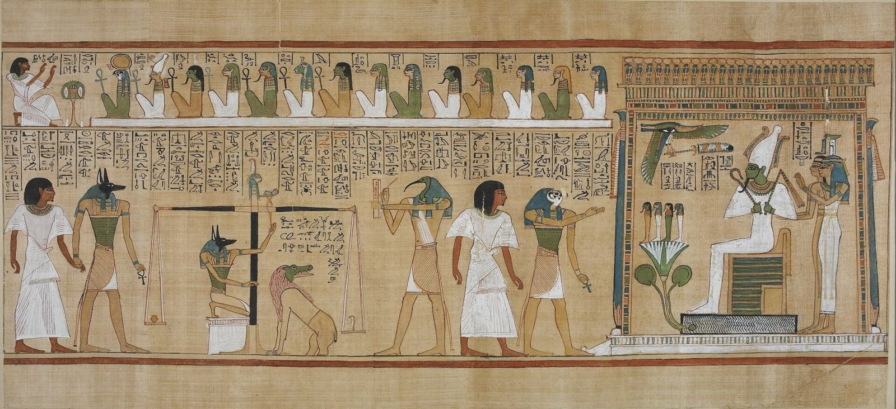
第4回
秤の片方には心臓、もう片方には羽根——傾かなければ、その人は釣合っているとされた。
Hunefer（古代エジプトの書記）／Public domain／Wikimedia Commons（フネフェルの『死者の書』第3葉「心臓の秤量」、大英博物館所蔵）
2026-10-13／講義資料「第4回」（教科書 3.1節 p.27–35、例題 3.1・3.3・3.4）の範囲。第2・3回で、物体に働く力とモーメントは「合力 $\boldsymbol R$ ＋合モーメント $\boldsymbol M$」の2つにまとめられることを見た。この回は、その2つがともに 0 になる——つまり釣合い——ときに何が言えるか、そして、それを使って支えの力（反力）を実際に求めることが目標である。
授業の共通の題材「小型移動マニピュレータ」が、今回は壁を押す。アームの先端が垂直な壁を 100 N で押している。台車の車輪 A はブレーキで回らず、車輪 B は自由に回る。床と車輪は滑らない。このとき、車輪 A・B は床からどれだけの力を受けているか。
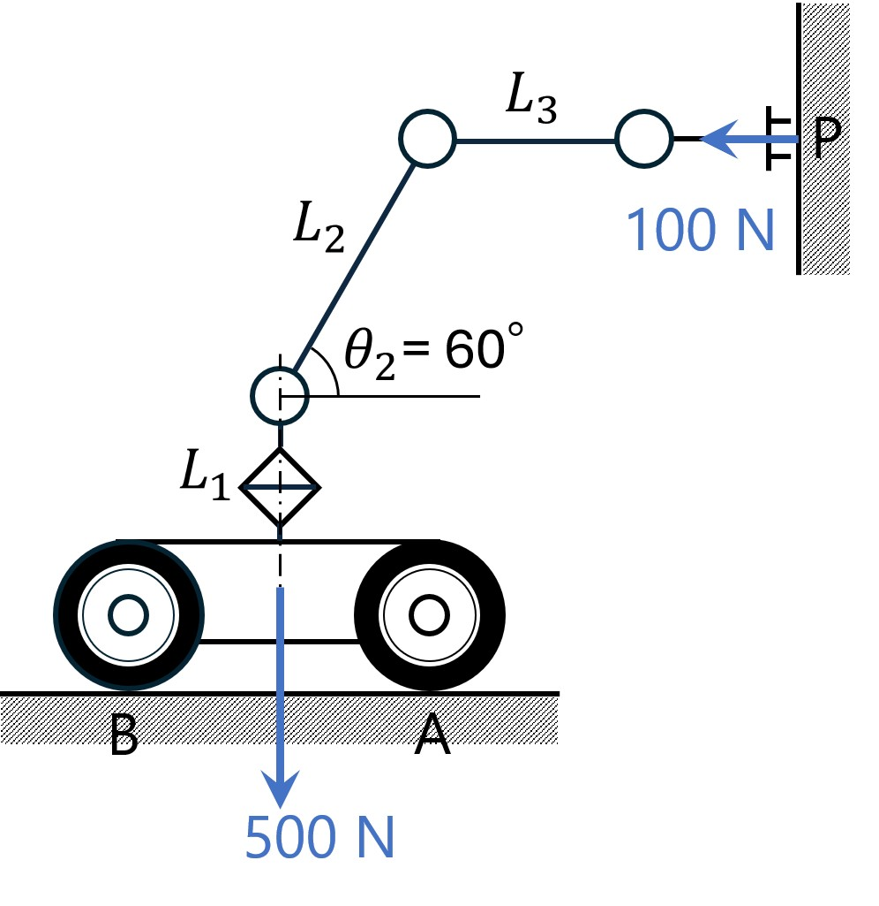
床は車輪を支えている。その支える力は、壁の押す力と台車の重さの両方に応じて、ちょうど「つぶれも浮きもしない」大きさに決まっているはずだ。「ちょうど決まる」ことを式にしたのが釣合い条件で、この回の主題である。講義資料が挙げた「今日のポイント」は次の4つ。
動機：橋も、棚も、壁を押すロボットも、「動かずに」そこにある。止まっているものには、見えない力が必ず働き合って、互いに打ち消している。この「打ち消し合い」を、第2・3回の道具で正確に言い直したい。
第3回で、物体に働くどんな力の集まりも、1つの基準点 P に集めれば合力 $\boldsymbol R$ ＋合モーメント $\boldsymbol M_P$ の2つに置き換えられることを見た（式2.58・2.59）。置き換えのあとで、力の集まりが物体に与える作用は、この2つだけで決まる。したがって、その作用が「何もない」のと同じになる条件は、2つがともに 0 のときである。
成分で書くと、3次元では $\sum F_x=\sum F_y=\sum F_z=0$ と $\sum M_x=\sum M_y=\sum M_z=0$ の6本の式になる。2次元（力がすべて $xy$ 平面内）では、$F_z$・$M_x$・$M_y$ が自動的に 0 になり、3本、 $$\sum F_x=0,\qquad\sum F_y=0,\qquad\sum M_z=0\qquad(1.2)$$ が残る（$M_z$ は第2回の「反時計回りを＋とするモーメント」）。この「3本」と「6本」という数が、あとで未知数を数えるときの基準になる（3章）。
動機：質点（大きさのない物体）や、すべての力の作用線が1点で交わる場合は、いちばん簡単な場合である。ここで 6 本の式のうち何が不要になるかを確かめておく。
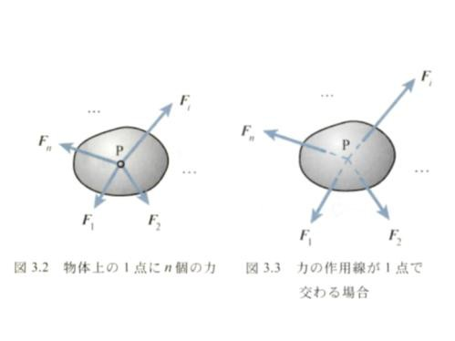
① 基準点を P にとる。← 基準点は自由に選べる（1.4 節）。まず、いちばん都合のよい点で考える。
② 各力の作用線は P を通るので、作用点を作用線上で P までずらしてよい（第2回：力は作用線上でずらしてよい）。ずらすと $\boldsymbol r_i=\boldsymbol 0$ なので、$\boldsymbol r_i\times\boldsymbol F_i=\boldsymbol 0$。つまり各力は P のまわりのモーメントを生じない。
③ よって (1.1) の第2式は自動的に成り立ち、残るのは第1式 $\sum\boldsymbol F_i=\boldsymbol 0$ だけ（式 3.3）。
④ ベクトルの等式 $\boldsymbol a=\boldsymbol 0$ は、3つの成分がそれぞれ 0 であることと同じ（成分は互いに独立）。だから成分ごとの式 (3.6) に分かれる。2次元なら $z$ 成分は不要で、$x,y$ の2本。
1点の釣合いは、力の矢印を頭と尻でつないだ多角形が閉じることと同じである（次の 1.5 節の図）。
力が別々の点に作用するときは、モーメントも加わる。第3回の合成（式2.58・2.59）をそのまま使う。
(3.28) は (1.1) と同じ式を、講義資料の記号で書いたものである。1.2 節の (3.3) は、すべての $\boldsymbol r_i$ を 0 にできた特別な場合にあたる。偶力のモーメント $\boldsymbol M'_j$ は $\boldsymbol r$ を掛けずにそのまま足す点に注意（第3回で「偶力は基準点によらない」と示した）。
動機：(3.28) は、基準点 P をどこにとって書いてもよい。では、点を変えると式は変わるのか。講義資料のヒント iii・iv（「モーメント中心を適切に選べば、未知数を1つだけ含む式を導ける」「軸は水平・垂直にとる必要はない」）の根拠を示す。
① 点 P の位置ベクトルを $\boldsymbol p$、点 Q の位置ベクトルを $\boldsymbol q$ とし、力 $\boldsymbol F_i$ の作用点を $\boldsymbol x_i$ とする。基準点を Q にとると、力 $\boldsymbol F_i$ の腕は $\boldsymbol x_i-\boldsymbol q$（終点−始点）。
② Q まわりのモーメント：$\boldsymbol M_Q=\sum_i(\boldsymbol x_i-\boldsymbol q)\times\boldsymbol F_i+\sum_j\boldsymbol M'_j$。← 偶力 $\boldsymbol M'_j$ は基準点によらないので、そのまま。
③ 外積の分配法則（第3回 3.3 節）で $(\boldsymbol x_i-\boldsymbol q)\times\boldsymbol F_i=\boldsymbol x_i\times\boldsymbol F_i-\boldsymbol q\times\boldsymbol F_i$ と分ける： $$\boldsymbol M_Q=\Bigl[\sum_i\boldsymbol x_i\times\boldsymbol F_i+\sum_j\boldsymbol M'_j\Bigr]-\boldsymbol q\times\sum_i\boldsymbol F_i=\boldsymbol M_O-\boldsymbol q\times\boldsymbol R$$ （$\boldsymbol M_O$ は原点まわりの合モーメント、$\boldsymbol q$ は $i$ によらないので和の外に出した。）P についても同じ式 $\boldsymbol M_P=\boldsymbol M_O-\boldsymbol p\times\boldsymbol R$ が成り立つ。
④ 差をとると、$\boldsymbol M_Q=\boldsymbol M_P+(\boldsymbol p-\boldsymbol q)\times\boldsymbol R=\boldsymbol M_P+\boldsymbol r_{QP}\times\boldsymbol R\qquad(1.3)$（$\boldsymbol r_{QP}$ は Q から P へ向かうベクトル。第3回 6.4 節の「基準点を移す式」と同じ）。
⑤ $\boldsymbol R=\boldsymbol 0$ なら右辺の第2項が消えて $\boldsymbol M_Q=\boldsymbol M_P$。
（証明は一行：$\boldsymbol 0\cdot\boldsymbol u=0$ に、内積の分配法則 $(\sum\boldsymbol F_i)\cdot\boldsymbol u=\sum(\boldsymbol F_i\cdot\boldsymbol u)$ を使うだけ。）
この2つの自由を使うと、使う式の選び方も自由になる。2次元で、式の組を何通りにとってもよいことの根拠を示す。
① $\sum M_A=0$ のとき、(1.3) から合力 $\boldsymbol R\ne\boldsymbol 0$ なら、A に集めた合力の作用線は A を通る（A まわりの合モーメントが 0 なので、合力は A を通る1本の力と同じ）。← $\boldsymbol R\ne\boldsymbol 0$ で、モーメントが 0 になる点は合力の作用線上にしかない。
② 同じ理由で $\sum M_B=0$ なら、作用線は B も通る。すると $\boldsymbol R$ は直線 AB に沿う（図の例）。
③ (b)：直線 AB に垂直でない $\boldsymbol u$ では $\boldsymbol R\cdot\boldsymbol u\ne0$（$\boldsymbol R\ne\boldsymbol 0$ ならば）。$\sum\boldsymbol F\cdot\boldsymbol u=0$ がこれと矛盾するので、$\boldsymbol R=\boldsymbol 0$。
④ (c)：$\boldsymbol R$ が直線 AB に沿っているとき、AB 上にない点 C のまわりのモーメントは $d\,|\boldsymbol R|\ne0$（$d$ は C から直線 AB までの距離）。$\sum M_C=0$ がこれと矛盾するので、$\boldsymbol R=\boldsymbol 0$。以上で、いずれも $\boldsymbol R=\boldsymbol 0$ かつ $\sum M_A=0$ に至るので、(1.2) と同値。
長さ 4 m の梁を、左端 A（ピン）と右端 B（ローラー）で水平に支える。A から 1.5 m の点に 600 N の下向きの荷重がある。梁の重さは無視する。A・B の反力を、未知数が1つの式を選んで求めよ。
解答
① 梁にはたらく外力：荷重 600 N（下向き）、A の反力 $R_{Ax},R_{Ay}$、B の反力 $R_B$（上向き、ローラーなので鉛直のみ）。未知数は 3、式は 3 本。
② 座標：$x$ を右、$y$ を上。反時計回りを＋。
③④ A まわり：A の反力は腕 0 なので消える。$R_B\times4-600\times1.5=0$。← 600 N は A の右 1.5 m で下向き＝時計回り（−）、$R_B$ は右 4 m で上向き＝反時計回り（＋）。
⑤ $R_B=900/4=225$ N。次に B まわり：$600\times(4-1.5)-R_{Ay}\times4=0$ より $R_{Ay}=1500/4=375$ N。$x$ 方向：$R_{Ax}=0$。
⑥ 確かめ（使わなかった式で）：$\sum F_y=375+225-600=0$ ✓。単位は N。
■ 状況を絵にする。梁（はり）は「細長い棒」で、ここでは水平な 4 m の棒を、両端の 2 か所だけで下から支えている。
■ 支点の種類（ここが設定の肝）。支点は「どの向きの力を出せるか」で未知数の数が決まる。
・ピン（A）：梁が回るのは許すが、上下にも左右にも動かさない。だから反力は鉛直 $R_{Ay}$ と水平 $R_{Ax}$ の2成分（未知数 2）。
・ローラー（B）：車輪が床の上を転がるので、左右には力を出せない（床が摩擦なしで滑る）。出せるのは床に垂直な力だけで、鉛直の $R_B$ の1成分（未知数 1）。
合計の未知数は 3（$R_{Ax},R_{Ay},R_B$）。平面の釣合いの式は $\sum F_x=0,\ \sum F_y=0,\ \sum M=0$ の 3 本なので、ちょうど解ける。これが「単純梁」の意味である（もし両端ともピンだと未知数 4 で式が足りない）。
■ 解き方の考え方。3 本の式を連立で解いてもよいが、モーメントをとる点を選べば未知数が 1 つの式になる（1.4 節の戦略）。
① A まわりでモーメントをとる。A を通る力（$R_{Ax},R_{Ay}$）は腕 0 なので式から消え、残る未知数は $R_B$ だけ。符号：A から右に 4 m の位置で上向きの力は、A を中心に梁を反時計回りに回そうとする（＋）。A から右 1.5 m で下向きの荷重は時計回り（−）。
$\sum M_A=R_B\times4-600\times1.5=0\ \Rightarrow\ R_B=\dfrac{900}{4}=225\ \mathrm{N}$
② 同じく B まわりでは $R_B$ が消え、荷重の腕は $4-1.5=2.5$ m。B から見て荷重（下向き、左 2.5 m）は反時計回り（＋）、$R_{Ay}$（上向き、左 4 m）は時計回り（−）：
$\sum M_B=600\times2.5-R_{Ay}\times4=0\ \Rightarrow\ R_{Ay}=\dfrac{1500}{4}=375\ \mathrm{N}$
③ 水平方向は荷重が鉛直だけなので $R_{Ax}=0$。
④ 検算は、まだ使っていない $\sum F_y=0$：$375+225-600=0$ ✓。
■ 直感での確認。荷重は A に近い（1.5 m）ので、A が多め（375 N）、B が少なめ（225 N）を支える。比は $375:225=5:3=2.5:1.5$ で、荷重から遠い側の距離の比になっている（てこと同じ）。反力の和は荷重 600 N に一致する。
よくある間違い：モーメントの符号を取り違える／B の反力を斜めにしてしまう（ローラーは垂直方向のみ）。
講義資料は「解は省略」としているが、ここまでの道具でちょうど解ける形なので、手順どおりに解いてみる（本教材の自作の解答）。
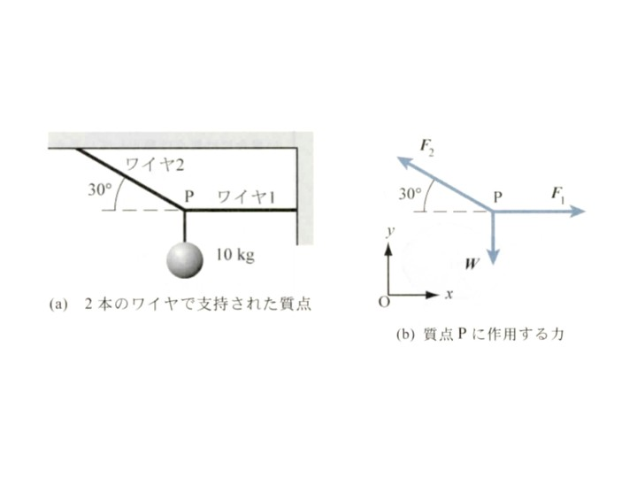
質量 10 kg の質点 P を2本のワイヤで吊る。ワイヤ1は水平、ワイヤ2は水平から 30° の向きで、壁につながっている。それぞれのワイヤに生じる張力の大きさを求めよ。重力加速度は $g=9.81\ \mathrm{m/s^2}$ とする。
解答
① 系：質点 P。外力は、ワイヤ1の張力 $F_1$（右向き）、ワイヤ2の張力 $F_2$（左上向き）、重力 $W=mg=10\times9.81=98.1$ N（下向き）。ワイヤは引くことしかできないので、張力は P をワイヤの向きに引く（4.3 節）。3 力とも P を通るので、1.2 節の (3.6) が使える。
② 座標：$x$ を右、$y$ を上。
③ 成分：$\boldsymbol F_1=(F_1,\ 0)$、$\boldsymbol F_2=(-F_2\cos30°,\ F_2\sin30°)$、$\boldsymbol W=(0,\ -98.1)$。
④ $\sum F_x=F_1-F_2\cos30°=0$、$\sum F_y=F_2\sin30°-98.1=0$。← 未知数 $F_1,F_2$ の2つ、式の数も2本。
⑤ 第2式から $F_2=98.1/\sin30°=\mathbf{196.2}$ N。第1式から $F_1=F_2\cos30°=196.2\times0.8660=\mathbf{169.9}$ N。
⑥ 確かめ：力の多角形（図1.2 右）は閉じる。3力の和 $F_1-F_2\cos30°=169.9-169.9=0$ ✓。$F_2$ のほうが重さ 98.1 N より大きい：ワイヤが浅い角度（水平に近い）で引くほど、重さを支えるのに大きな張力が要る（$F_2=W/\sin30°=2W$）。
講義資料は、この例題を「内力に関して」と位置づけている：ワイヤの張力は理解しやすい。なぜなら常に引張りだから。もし棒なら、逆向きの作用（圧縮）もある。この「引張り・圧縮」の区別は 4 章で扱う。
PHOTO 1｜現実
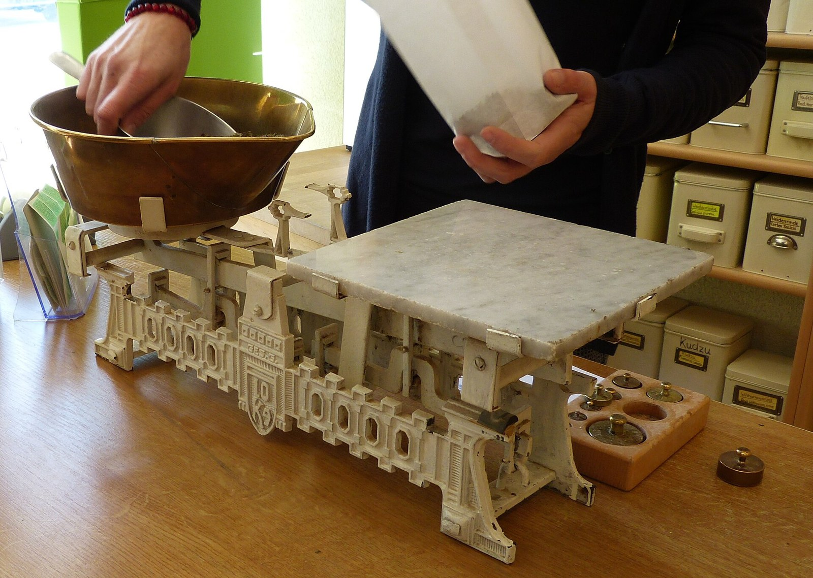
皿に物を載せ、分銅を足していくと、見えない二つのモーメントがちょうど等しくなる点で針が止まる。
GabrielleMerk／CC BY-SA 4.0／Wikimedia Commons（薬草用の骨董秤と分銅）
MITATE 1｜見立て
5つの石は、どの接点でも、上からの重さと下からの支えが等しくなる位置を見つけて、そこで静止している。
Leandro Inocencio／CC BY-SA 3.0／Wikimedia Commons（ロック・バランシング「Counter Balance」）
動機：ロボットのアームは、関節でつながった何本もの棒でできている。関節ごとに、隣り合う棒どうしが押し合い引き合っている。この力を、全部、釣合いの式に入れなければならないのか。——答えは「入れなくてよい」で、それを示すのがこの章である。
系を $n$ 個の質点の集まりとして考える（連続した物体は、質点の集まりと見なせる）。質点 $i$ の位置を $\boldsymbol r_i$、質点 $i$ に働く外力を $\boldsymbol F_i$、質点 $j$ が質点 $i$ に及ぼす力（内力）を $\boldsymbol F_{ij}$ と書く。
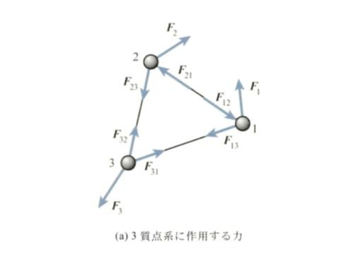
系全体が釣合いにあるとき、各質点も静止しているので、質点 $i$ はそれ自身で釣合っている（1.2 節）： $$\boldsymbol F_i+\sum_{\substack{j=1\\j\ne i}}^{n}\boldsymbol F_{ij}=\boldsymbol 0\qquad(2.1)$$ これを全質点について足す。ここで作用反作用の法則「$\boldsymbol F_{ji}=-\boldsymbol F_{ij}$（質点 $j$ が $i$ に及ぼす力と、$i$ が $j$ に及ぼす力は、大きさが等しく向きが逆）」を使う。
① (2.1) を $i=1,2,3$ について書く：
$\boldsymbol F_1+\boldsymbol F_{12}+\boldsymbol F_{13}=\boldsymbol 0,\quad\boldsymbol F_2+\boldsymbol F_{21}+\boldsymbol F_{23}=\boldsymbol 0,\quad\boldsymbol F_3+\boldsymbol F_{31}+\boldsymbol F_{32}=\boldsymbol 0$
② 3つを足す：$\boldsymbol F_1+\boldsymbol F_2+\boldsymbol F_3+\boldsymbol F_{12}+\boldsymbol F_{13}+\boldsymbol F_{21}+\boldsymbol F_{23}+\boldsymbol F_{31}+\boldsymbol F_{32}=\boldsymbol 0$。
③ 内力の6項を、同じ質点のペアでまとめる：$(\boldsymbol F_{12}+\boldsymbol F_{21})+(\boldsymbol F_{13}+\boldsymbol F_{31})+(\boldsymbol F_{23}+\boldsymbol F_{32})$。← 作用反作用で各かっこは $\boldsymbol 0$。
④ 一般の $n$ でも、内力の二重和 $\sum_i\sum_{j\ne i}\boldsymbol F_{ij}$ は、ペア $(i,j)$ と $(j,i)$ が必ず対になって消える。残るのは $$\sum_{i=1}^{n}\boldsymbol F_i=\boldsymbol 0\qquad(2.2)$$ つまり、内力を入れずに、外力だけで釣合いの式が立つ。
モーメントでは、「内力が逆向きで等しい」だけでは足りない。作用点が違うので、腕の長さが違うからである。必要なのは、内力が2つの質点を結ぶ直線の上にあることである（強い形の作用反作用）。
① 質点 $i$ に働く力の、原点 O まわりのモーメントの釣合い（(2.1) に左から $\boldsymbol r_i\times$ をかけたもの）： $$\boldsymbol r_i\times\Bigl(\boldsymbol F_i+\sum_{j\ne i}\boldsymbol F_{ij}\Bigr)=\boldsymbol 0$$ これを全質点について足す。
② 内力の項を、ペアでまとめる。たとえば質点 1 と 3 のペアでは、質点 1 の式に $\boldsymbol r_1\times\boldsymbol F_{13}$、質点 3 の式に $\boldsymbol r_3\times\boldsymbol F_{31}$ が出る。$\boldsymbol F_{31}=-\boldsymbol F_{13}$ を使うと、 $$\boldsymbol r_1\times\boldsymbol F_{13}+\boldsymbol r_3\times\boldsymbol F_{31}=(\boldsymbol r_1-\boldsymbol r_3)\times\boldsymbol F_{13}$$ ← 外積の分配法則。$\boldsymbol F_{31}$ を $-\boldsymbol F_{13}$ に直して、$\boldsymbol F_{13}$ でくくった。
③ 一般に、全質点では $$\sum_{i=1}^{n}\boldsymbol r_i\times\boldsymbol F_i+\sum_{i=1}^{n}\sum_{j>i}(\boldsymbol r_i-\boldsymbol r_j)\times\boldsymbol F_{ij}=\boldsymbol 0\qquad(2.3)$$ （ペアを $j>i$ の側だけで数えた。）
④ ここで、$\boldsymbol r_i-\boldsymbol r_j$ は質点 $j$ から $i$ へ向かうベクトルで、内力 $\boldsymbol F_{ij}$ はこの2点を結ぶ直線の上にある。すなわち $\boldsymbol r_i-\boldsymbol r_j$ と $\boldsymbol F_{ij}$ は平行で、平行なベクトルの外積は 0：$(\boldsymbol r_i-\boldsymbol r_j)\times\boldsymbol F_{ij}=\boldsymbol 0$（第3回 3.3 節の「$\sin0=0$」）。
⑤ よって (2.3) の第2項は消えて、 $$\sum_{i=1}^{n}\boldsymbol r_i\times\boldsymbol F_i=\boldsymbol 0\qquad(2.4)$$ モーメントの釣合い式にも、内力は現れない。
これが、自由物体図に外力だけを描く理由である（講義資料 ヒント i：「FBD には、物体に作用するすべての外力を記入する」）。外力とは、作用力（荷重や重力など）と反力（地面・壁・支点（ピン、ローラー）・ケーブル（ひも）などからの反作用）である。
① 「内力は存在しない」ではない。内力は確かに存在し、部材が壊れるかどうかは内力で決まる（材料力学で扱う）。ただし、系全体の釣合い式には出てこないだけである。
② 「内力は求められない」でもない。系を2つに分け、片方だけを自由物体図に描くと、切り口に働く内力は、その部分系にとって外力になる。そこで釣合いを立てれば、内力が求まる（4 章、6 章）。
PHOTO 2｜現実
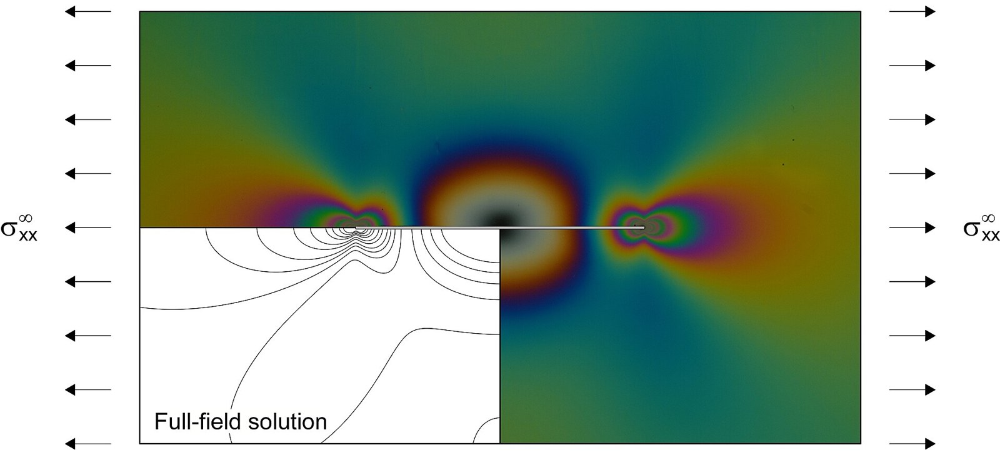
き裂のまわりの色の縞は、外からは見えない部材の内部の力が、そのまま模様になって現れたものである。
SSMG-ITALY／CC BY-SA 3.0／Wikimedia Commons（き裂まわりの光弾性縞と計算結果）
MITATE 2｜見立て
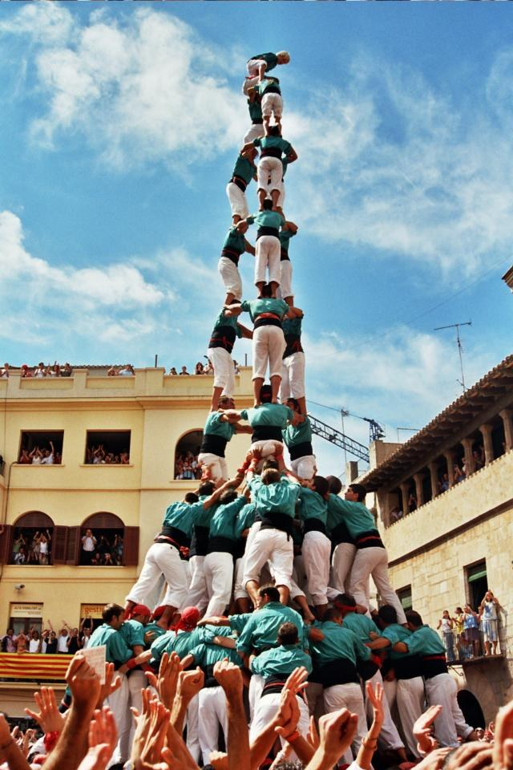
どの人も下の人の肩を踏みしめているが、塔を外から見たとき、その力は一つも数に入らない。
Eric Sala & Tània García／CC BY-SA 2.5／Wikimedia Commons（ビラフランカのカステル）
動機：物体を地面や壁につなぐと、物体は動けなくなる。動けなくなるのは、つなぎ目が力（と、ときにモーメント）を物体に及ぼして、動きを止めているからである。この力が反力（支点反力・支持力）で、荷重と違って、大きさも向きも「あらかじめ与えられていない」。釣合いの問題の未知数は、ほとんどが反力である。反力の「形」を、先に決めておかなければならない。
理由は簡単である。つなぎ目が許している動きの向きに力を出せるなら、その向きには動けるはずがない（動けないものは「許している」とは言わない）。逆に、妨げている向きには、動こうとする力に応じて、動かないだけの力が出る。
2次元（物体が平面内を動く）では、物体は$x$ 方向の並進・$y$ 方向の並進・回転の3つの動き（自由度3）をもつ。支点は、そのうちいくつを止めるかで3種類に分かれる。
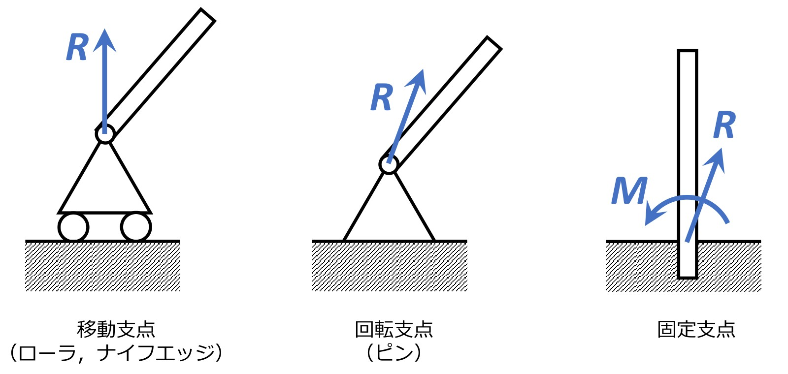
| 支点 | 妨げる動き | 許す動き | 反力の未知数 |
|---|---|---|---|
| 移動支点（ローラー、ナイフエッジ支持） | 面に垂直な向きの並進 | 面に沿った並進、回転 | 1（反力は可動方向に垂直） |
| 回転支点（ピン支持） | $x$・$y$ 両方向の並進 | 回転 | 2（反力は角度をもつ：大きさ＋向き、または $R_x,R_y$） |
| 固定支点（固定端） | $x$・$y$ 両方向の並進と回転 | なし | 3（反力に加えて、反モーメントを生じる：$R_x,R_y,M$） |
この表は、3.1 の原理から導ける。たとえばローラーは、面に沿って転がるのを許す（その向きの力を出さない）が、面に押し付けられる向き、または面から離れる向きには動けない。この動けない向きが面に垂直な1方向だけなので、未知数は1つになる。
3次元では、物体の自由度は 6（並進 3 ＋回転 3）。ボール継手は 3 つの並進を妨げて回転を許すので、未知数は力の3成分。固定端は 6 つすべてを妨げるので、力3成分＋モーメント3成分で未知数は 6。7 章の例題では、棒の足元が「ボール継手」（未知数 3）になっている。
釣合いの式は、1.1 節の数だけある：2次元で 3 本、3次元で 6 本（物体の自由度の数と同じ。これは偶然ではなく、「動ける向きの数だけ、動かない条件が要る」から）。
講義資料の言い方では、未知数の数 ＝ 必要な式の数。だから、問題を解く前に、必ず未知数を数える（ヒント：1.「未知数の数を意識すること」）。
| 構造（2次元） | 未知数 | 式 | 判定 |
|---|---|---|---|
| 梁の両端を、ピンとローラーで支える | 2＋1＝3 | 3 | 静定 |
| 片持ち梁（一端を固定） | 3 | 3 | 静定 |
| 梁の両端を、ともにピンで支える | 2＋2＝4 | 3 | 不静定（1 つ多い） |
| 梁の両端を、ともにローラーで支える（水平面） | 1＋1＝2 | 3 | 機構（水平方向の力があれば動く） |
次の支持について、(1) 壁に埋めた鉄棒の先に荷重（固定端）、(2) 水平な棒を、左端のピンと、中央付近を上から吊るロープ1本で支える、の未知数の数と、静定かどうかを答えよ。
解答 (1) 固定端：未知数 3（$R_x,R_y,M$）、式 3。静定。(2) ピン 2＋ロープ 1＝3、式 3。静定（ロープは向きが既知で、引張りのみ）。
講義資料の例（スライド12）：ロボット台車を、3次元で、4つの車輪で支える。
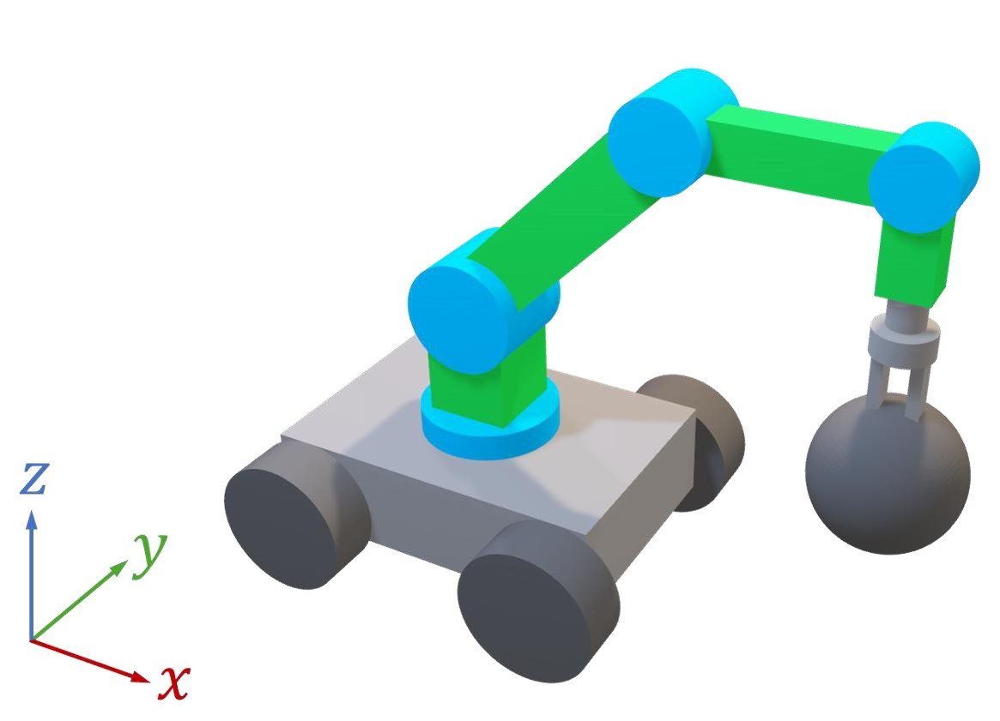
未知数は 4 つの車輪の鉛直の接地力 $N_1\sim N_4$、式は、鉛直方向の力の釣合い $\sum F_z=0$ と、2 本の水平軸まわりのモーメントの釣合い $\sum M_x=\sum M_y=0$ の3 本（水平方向の力と鉛直軸まわりのモーメントは、鉛直な接地力が出さないので式にならない）。未知数 4 > 式 3 ＝ 不静定問題。
何が起きているのかを、具体的に見る。長方形（長さ $a$、幅 $b$）の四隅に車輪があり、全体の重さ $W$ が中央 G にあるとする。車輪の位置は $(\pm a/2,\ \pm b/2)$。
① 力の釣合い：$N_1+N_2+N_3+N_4=W$。
② $x$ 軸まわり（$y=\pm b/2$ の2組）：$\tfrac b2(N_1+N_2)-\tfrac b2(N_3+N_4)=0$。よって $N_1+N_2=N_3+N_4$。
③ $y$ 軸まわり（$x=\pm a/2$ の2組）：$N_1+N_4=N_2+N_3$。
④ ①②より $N_1+N_2=W/2$、①③より $N_1+N_4=W/2$。ここで $N_1=W/4+t$ と置くと、$N_2=N_4=W/4-t$、$N_3=W/4+t$： $$(N_1,N_2,N_3,N_4)=\Bigl(\tfrac W4+t,\ \tfrac W4-t,\ \tfrac W4+t,\ \tfrac W4-t\Bigr)\qquad(3.1)$$
⑤ $t$ はどんな値でもこの3本の式を満たす。つまり、静力学の式だけでは、4輪の接地力は決まらない。解は、対角線上の2輪に $+t$、もう一方の対角線上の2輪に $-t$ ずつ「ずれる」自由度をもつ。
この $t$ を決めるのは何か。台車や床の変形である。机の4本の脚の1本が少し短いとガタガタするが、あのとき、短い脚の接地力は 0（$t=W/4$）になっている。剛体（変形しない物体）と仮定する限り、$t$ は決まらず、決めるには、材料の変形（たわみ）を考える（材料力学、不静定問題）。逆に、3つの車輪（3点）で支えれば、未知数 3 ＝ 式 3 で、ガタガタしない。
だから第4回の例題（ロボット台車、6.2 節）は、2つの車輪の「組」（A と B）にまとめた2次元の問題になっている（2 つの車輪の接地力を1つにまとめれば、不静定は解消する）。
PHOTO 3｜現実
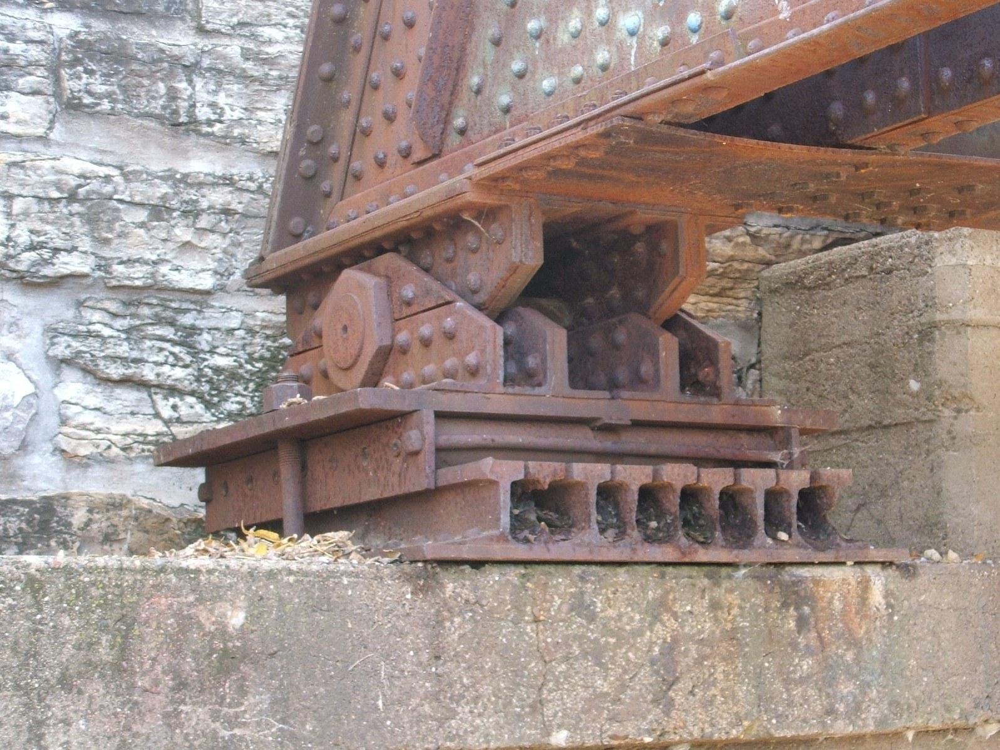
桁の端は、ころの列の上に載っているだけで、鉛直の力は受け止めるが、横には逃げることができる。
Douglas W. Jones／CC0／Wikimedia Commons（橋桁の端の支承（ローラー支承））
MITATE 3｜見立て
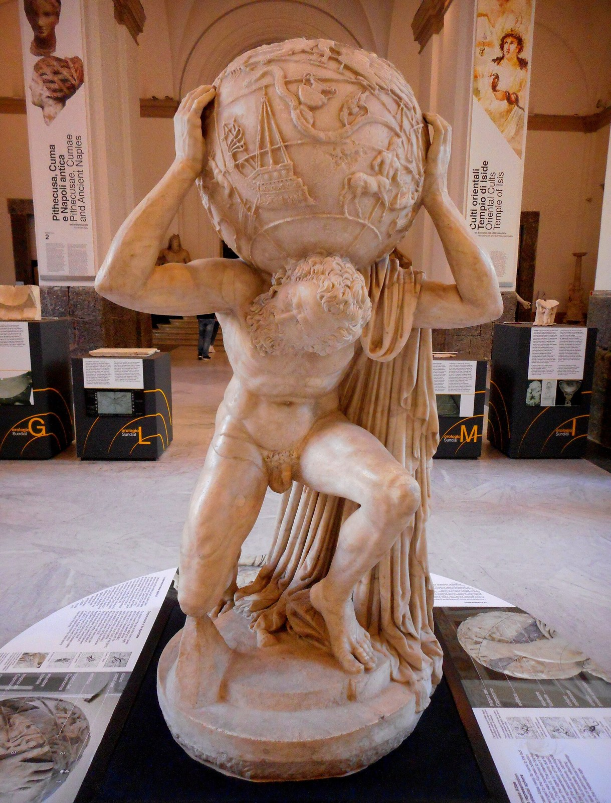
天球を担ぐ者は、肩で受けた重さと同じ大きさの力を、足もとの地面から受け取り続けている。
Carlo Raso／Public domain／Wikimedia Commons（ファルネーゼのアトラス、ナポリ国立考古学博物館）
動機：反力は、ふつう、大きさも向きも分からない（ピンなら未知数 2）。ところが、向きが最初から分かる力があれば、未知数が減って、解きやすくなる。向きが分かるものの代表が二力部材である。
① 2点を P₁、P₂、そこに働く力を $\boldsymbol F_1,\boldsymbol F_2$ とする。ほかに力は働かない。
② 力の釣合い $\boldsymbol F_1+\boldsymbol F_2=\boldsymbol 0$ より、$\boldsymbol F_2=-\boldsymbol F_1$。大きさは等しく向きは逆。← これが講義資料の定義の前半。
③ P₁ まわりのモーメントの釣合い。$\boldsymbol F_1$ は P₁ に作用するので腕が 0。残るのは P₂ の力：$\overrightarrow{\mathrm{P_1P_2}}\times\boldsymbol F_2=\boldsymbol 0$。← 基準点を、未知の力が作用している点にとると、式が単純になる（1.4 節）。
④ 外積が $\boldsymbol 0$ になるのは、2つのベクトルが平行のとき（第3回 3.3 節）。よって $\boldsymbol F_2$ は $\overrightarrow{\mathrm{P_1P_2}}$ に平行。② より $\boldsymbol F_1$ も同じ直線に沿う。□
二力部材の両端のピン反力は、ふつう 2 成分ずつの未知数だが、向きが既知（2点を結ぶ直線）なので、大きさ 1 つだけが未知数になる。講義資料の言葉では、「方向が限定される ⇒ 未知数の数を減らせる」。さらに、この部材に接続された物体に働く力は、作用反作用の法則（大きさ等しく逆向き）で、やはりこの直線の向きを向く。
二力部材の内部の力（内力）は、2つの向きしかない。引張り（ひっぱり）と圧縮である。2.4 節で見たように、部材を切ると、切り口に働く内力は、切った側にとって外力になる。
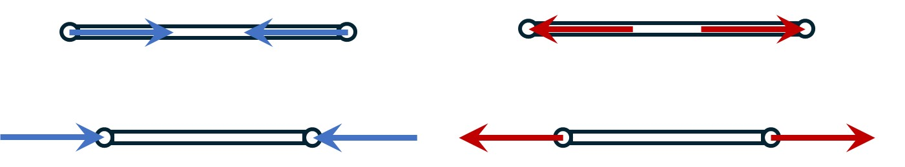
| 部材の状態 | 部材がしようとすること | 節点（支点）に働く力 | |
|---|---|---|---|
| 引張り | 引き伸ばされている | 縮もうとする | 節点を部材の方向へ引く力 |
| 圧縮 | つぶされている | 伸びようとする | 節点を部材から遠ざけようとする力 |
釣合いは、節点に働く力で考える（講義資料 4）。つまり、節点を自由物体図に描き、そこに部材が及ぼす力を、「引張りなら部材のほうへ向く矢印、圧縮なら部材から離れる矢印」で描く。
講義資料の例（スライド14）：「部材 BD が AC から受ける力を求めよ」。資料は考え方（AC は二力部材で、BD が AC から受ける力は AC の方向）だけを述べ、数値を与えていない。ここでは、図から寸法を読み取って数値例を作り、手順を最後まで通してみる（寸法・質量は本教材の仮定）。
図のように、鉛直な柱に、部材 AC（A は柱にピン留め、C は BD にピン留め）と、部材 BD（B は柱にピン留め、D の先に質量 $m=10$ kg の物体がぶら下がる）がある。寸法（m）：A(0, 0)、B(0, 1)、C(0.9, 0.4)、D(1.5, 0)。C は直線 BD 上にある。部材の重さは無視する。部材 BD が AC から受ける力と、B のピンの力を求めよ。
解答
① 系と FBD：部材 BD を取り出す。外力は、D の物体の重さ $W=mg=98.1$ N（下向き）、B のピンの反力 $\boldsymbol B=(B_x,B_y)$（向き未知、未知数 2）、C で AC から受ける力。AC は両端のピンだけに力が働く二力部材なので、この力はAC の方向、つまり $\overrightarrow{\mathrm{AC}}=(0.9,\ 0.4)$ の向き。単位ベクトル $\boldsymbol u=(0.9,\ 0.4)/\sqrt{0.9^2+0.4^2}=(0.9138,\ 0.4061)$。大きさを $F$ とし、$\boldsymbol u$ の向きを正（BD が押される向き）に仮定する。未知数は $B_x,B_y,F$ の 3 つ、式も 3 本。
② 座標：$x$ を右、$y$ を上、反時計回りを＋。
③ 成分：AC から受ける力 $=F\boldsymbol u$、$\boldsymbol W=(0,\ -98.1)$。
④ 式：B まわりのモーメントをとる（B の反力が消えて、未知数が $F$ だけになる）。B から C、D への位置ベクトルは $\overrightarrow{\mathrm{BC}}=(0.9,\ -0.6)$、$\overrightarrow{\mathrm{BD}}=(1.5,\ -1.0)$。2次元の外積 $r_xF_y-r_yF_x$ を使うと、
$\sum M_B=F\,(0.9\times0.4061-(-0.6)\times0.9138)+\bigl(1.5\times(-98.1)-(-1.0)\times0\bigr)=0.9138F-147.15=0$。
力の釣合い：$B_x+0.9138F=0$、$B_y+0.4061F-98.1=0$。
⑤ 解く：$F=147.15/0.9138=\mathbf{161.0}$ N。$B_x=-0.9138\times161.0=-147.2$ N、$B_y=98.1-0.4061\times161.0=32.7$ N。
⑥ 確かめ：使わなかった式、C まわりのモーメントで検算する。$\overrightarrow{\mathrm{CB}}=(-0.9,\ 0.6)$、$\overrightarrow{\mathrm{CD}}=(0.6,\ -0.4)$ で、$\boldsymbol B=(-147.2,\ 32.7)$、$\boldsymbol W=(0,\ -98.1)$：
$(-0.9)(32.7)-(0.6)(-147.2)+(0.6)(-98.1)-(-0.4)(0)=-29.4+88.3-58.9=0$ ✓。
$F>0$ なので仮定どおり、BD は AC から $\boldsymbol u$ の向き（A から C のほうへ、BD を押す向き）に 161 N の力を受ける。反作用で AC は BD から押されるので、AC は圧縮（4.3 節）。B のピンには (−147, 33) N（左向きにほぼ 147 N、上向きに 33 N）が働く。
答 BD が AC から受ける力：AC の方向（A→C 向き）に 161 N（AC は圧縮）。
もし AC が二力部材だと分かっていなければ、C のピンの力も大きさ・向きとも未知（未知数 2）になり、未知数は 4 ＞ 式 3 で解けない。二力部材と見抜くだけで、未知数が 1 つ減って、解けるようになった。
PHOTO 4｜現実
ピンで留めた細い棒の一本ずつは、両端の2点でだけ力を受け、押されるか引かれるかのどちらか一方をしている。
SharonPapierdreams／CC BY-SA 4.0／Wikimedia Commons（カンザス州のプラット・トラス橋）
ここまでの部品を、毎回同じ手順にまとめる。講義資料の「問題を解くためのヒント i〜v」は、この手順の各段階に対応している。
| 講義資料のヒント | 本教材の手順 | 根拠 |
|---|---|---|
| i. FBD を描く。すべての外力を記入 | ① | 2 章（内力は式に現れない） |
| ii. 反力の角度が既知なら作用線に沿って向きを仮定。正→正しい、負→反対 | ③ | 3.2 節、4.3 節 |
| iii. 3 式すべてが必要とは限らない。モーメント中心を適切に選ぶ | ④ | 1.4 節 (c)、(1.3) |
| iv. 軸は水平・垂直でなくてよい。合力の軸方向成分 $=0$ | ② | 1.4 節（軸の自由） |
| v. FBD で力の向きと符号が明らかなら、あとは「大きさ」が分かればよい | ③⑤ | 向きの仮定と符号 |
① 内力を描く：系の内部の力は、FBD に描かない。部分系にしたら、切り口の力を、外力として描く。
② 支点の種類を取り違える：ローラーに水平な反力を描く、ピンを未知数 1 にする、など。3.2 節の表で確かめる。
③ モーメントの符号：「反時計回りを正」をすべての項で守る。荷重の向きと腕の位置の2つで符号が決まる。
④ 未知数が多い点でモーメントをとる：未知の力の作用点まわりでモーメントをとれば、その力は式から消える。連立方程式を解く量が減る。
⑤ 確かめを省く：使わなかった釣合い式に代入するのは、ほとんど無料の検算である。
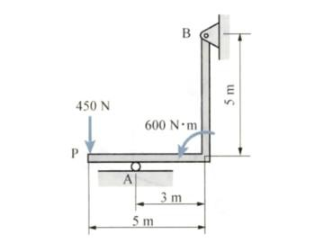
支点 A、B における支持力（支点反力）を求めよ。座標：P を原点として、$x$ を右、$y$ を上にとると、P(0, 0)、A(2, 0)、角 C(5, 0)、B(5, 5)（単位 m）。
解答例（講義資料の解答例）
① 系と FBD：棒全体。外力は、P の 450 N（下向き）、角の 600 N·m（モーメント。反時計回りに働く）、A の反力 $R_A$（ローラーなので鉛直・上向きに仮定）、B の反力 $R_{Bx},R_{By}$（ピンなので 2 成分）。未知数は $R_A,R_{Bx},R_{By}$ の 3、釣合い式も 3 本必要。
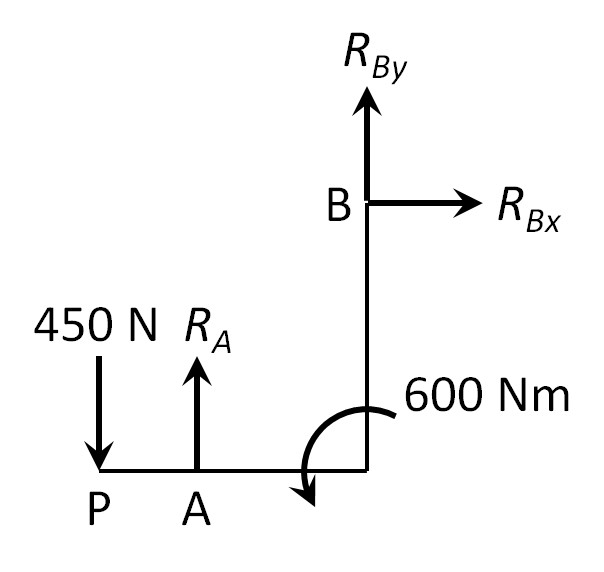
②③ 座標は上のとおり。力はすべて成分で書ける。
④ 力の釣合い：
$x$ 方向：$R_{Bx}=0\qquad(1)$
$y$ 方向：$R_{By}+R_A-450=0\qquad(2)$
点 C まわりのモーメントの釣合い（ccw を正）：
$600-R_{Bx}\times5+450\times5-R_A\times3=0\qquad(3)$
← 釣合い式は右辺を 0 にそろえる（講義資料）。各項の符号：450 N は C の左 5 m で下向き＝反時計回り（＋）、$R_A$ は C の左 3 m で上向き＝時計回り（−）、$R_{Bx}$ は C の上 5 m で右向き＝時計回り（−）、600 N·m は偶力で＋。
⑤ (1) より $R_{Bx}=0$。(3) に代入して $600+2250-3R_A=0$ より $R_A=\mathbf{950}$ N。(2) より $R_{By}=450-950=\mathbf{-500}$ N。
⑥ 確かめ：使わなかった式、P まわりのモーメントで検算する。P から A は (2, 0)、B は (5, 5) で、$\sum M_P=600+2\times950+\bigl(5\times(-500)-5\times0\bigr)=600+1900-2500=0$ ✓。
答 支点 A：950 N 上向き、支点 B：500 N 下向き（$R_{By}$ の符号が負なので、仮定の上向きと反対向き）。
別解（モーメントは、力が多く集まる点まわりで計算すると効率的：1.4 節の (c)）
B にはほとんどの未知数（$R_{Bx},R_{By}$）が集まる。点 B まわりで釣合いをとると、これらは腕が 0 で式から消える：
$600+450\times5-R_A\times3=0\qquad(3)'$
未知数が $R_A$ 1 つだけの式なので、直ちに $R_A=2850/3=950$ N が求まる。力の釣合い (1)(2) はそのままで、$R_{Bx}=0$、$R_{By}=-500$ N。
連立方程式を解く作業が、別解では 1 行で済んだ。ただし、どちらの解き方でも同じ答えが出ることが、1.4 節の定理（基準点の自由）の確かめにもなっている（(3) と (3)′ の差は $-R_{Bx}\times5$ で、(1) により 0）。
PHOTO 5｜現実
アームを伸ばして作業する台車は、車輪が地面に触れる数点だけで、自分の重さと作業の反力を受け止めている。
NASA/JPL-Caltech／Public domain／Wikimedia Commons（キュリオシティの想像図（写真ではない））
MITATE 5｜見立て
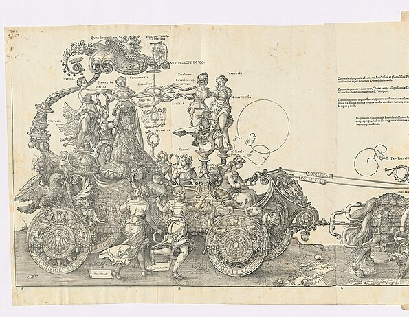
高く積み上げた飾りの重さも、最後には、車輪が地面に触れる何点かで支えられている。
Albrecht Dürer／CC0／Wikimedia Commons（『マクシミリアン1世の凱旋車』1523年、ナショナル・ギャラリー所蔵、左端を切り出し）
序の問いである。講義資料の解答例にそって、手順①〜⑥で解く。
ロボットのアームの先端が垂直な壁を押しており、壁から 100 N の力を受けている。車輪 A はブレーキによって回転せず、車輪 B は自由に回転できる。地面と車輪の間は滑らない。台車全体の重さは 500 N（2 つの車輪の中央 O に下向き）。車輪 A、B が地面から受ける反力を求めなさい。
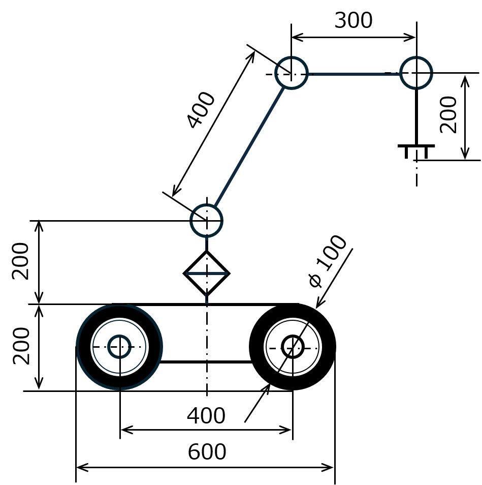
① 系と FBD：台車＋アーム全体を 1 つの剛体と見る（アームの関節の力は内力なので描かない：2 章）。外力は 3 つ：壁から受ける 100 N（水平、向きは左）、重さ 500 N（下向き）、車輪が地面から受ける反力。
車輪の反力の形（3.2 節）：車輪 B は自由に回るので、水平な力を出せない＝ローラー。反力は鉛直上向き $R_{By}$ のみ。車輪 A はブレーキで回らず、滑らないので、水平にも踏ん張れる＝ピン。$R_{Ax},R_{Ay}$ の 2 成分。未知数は $R_{Ax},R_{Ay},R_{By}$ の 3、式も 3 本必要。
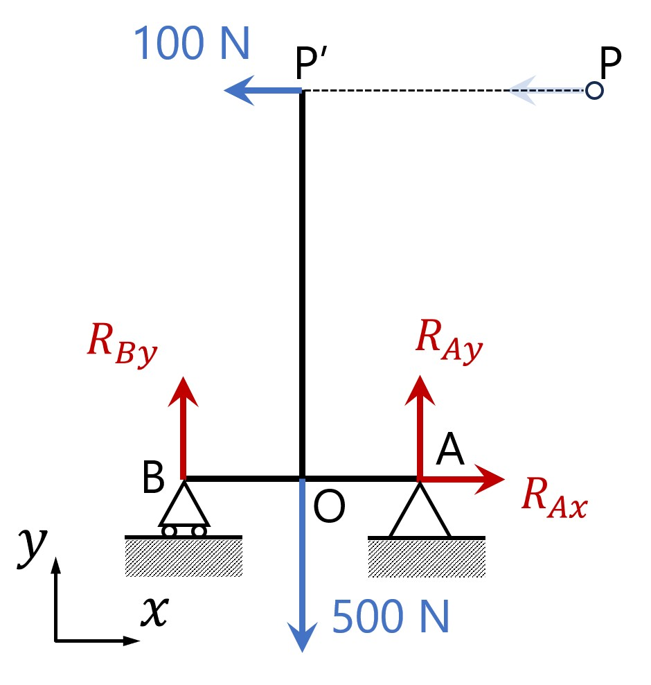
② 座標：O を原点に、$x$ を右、$y$ を上（壁は右側）。反時計回りを正。車輪の接地点は B(−0.2, 0)、A(0.2, 0) m。
③ 幾何学的条件：100 N の作用線の高さ（地面からの距離）$\mathrm{OP'}=H+L_1+L_2\sin60°=0.2+0.2+0.4\times0.8660=0.7464$ m。$\mathrm{AB}=0.4$ m（$\mathrm{OA}=\mathrm{OB}=0.2$ m）。← 水平な 100 N の効く腕は、作用線までの垂直距離＝高さ 0.7464 m。
④ 釣合い式：
$x$ 方向：$R_{Ax}-100=0\qquad(1)$
$y$ 方向：$R_{Ay}+R_{By}-500=0\qquad(2)$
点 A まわりのモーメント（ccw を正。力が多く集まる点）：A の反力（$R_{Ax},R_{Ay}$）は腕が 0 で消える。
$\mathrm{OP}\times100+\mathrm{OA}\times500-\mathrm{AB}\times R_{By}=0$、すなわち $0.7464\times100+0.2\times500-0.4R_{By}=0\qquad(3)$
← 100 N は左向きで高さ 0.7464 m：A のまわりに反時計回り（＋）。500 N は A の左 0.2 m で下向き：反時計回り（＋）。$R_{By}$ は A の左 0.4 m で上向き：時計回り（−）。
⑤ 解く：(1) より直ちに $R_{Ax}=\mathbf{100}$ N。(3) より $R_{By}=(74.64+100)/0.4=436.6\fallingdotseq\mathbf{437}$ N。(2) に代入して $R_{Ay}=500-436.6=63.4\fallingdotseq\mathbf{63}$ N。
⑥ 確かめ：使わなかった式、点 B まわりのモーメント：$0.4R_{Ay}-0.2\times500+0.7464\times100=25.4-100+74.6=0$ ✓（A の水平な反力は接地点が地面上なので腕 0）。
向き：壁に押されるアームは、台車を後ろ（左）へ倒そうとする。だから後ろの車輪 B の接地力が重さの半分（250 N）より増え（437 N）、前の車輪 A のほうが減る（63 N）。
答 車輪 A：水平 100 N（右向き）、鉛直 63 N（上向き）。車輪 B：鉛直 437 N（上向き）。
この結果は、グラフにするともっと分かる。壁を押す力 $F$ を変えると、(3) から $R_{By}=(0.7464F+100)/0.4$、$R_{Ay}=500-R_{By}$。
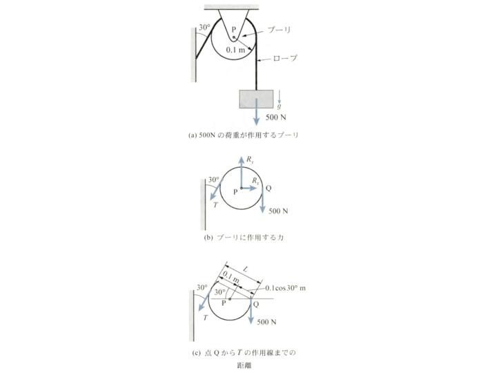
半径 0.1 m の滑らかな滑車に、ロープがかかっている。右側のロープは 500 N の荷重を吊り、左側のロープは、鉛直から 30° の向きで壁につながっている（教科書 図3.8）。滑車は中心の軸で支えられている。ロープの張力 $T$ と、軸の力を求めよ。
教科書の解き方（講義資料）：図3.8 (c) より、軸の反力 $R_x,R_y$、張力 $T$ を未知数として、
$R_x-T\sin30°=0$
$R_y-T\cos30°-500=0\qquad(3.30)$
$T\times0.1-500\times0.1=0$
これを解いて $T=500$ N、$R_x=250$ N、$R_y=933$ N。
別解（講義資料の問い「FBD は？ 未知数は？ 釣合い式は？」への答え。自作）。「プーリーが滑らかに回転する場合、$T=500$ N は自明」を使う。
① FBD：系は、滑車と、それに巻きついたロープの部分。外力は 3 つ：ロープの張力 $T$（左側、壁のほうへ）、500 N（右側）、軸の反力 $\boldsymbol R=(R_x,R_y)$。
② 座標：$x$ を右、$y$ を上。
③ $T=500$ N が自明な理由：滑車の中心 O まわりのモーメントを見る。$\boldsymbol R$ は O を通るので腕 0。$T$ も 500 N も滑車の円周に接する向き（半径 0.1 m の接線）なので、腕はどちらも半径 $0.1$ m。反時計回りを正とすると、$T\times0.1-500\times0.1=0$。← 滑らかな滑車では、ロープの両側の張力は等しい。これが教科書の第 3 式。したがって $T=500$ N。
④ 未知数は $R_x,R_y$ の 2 つ、使う式は力の釣合い 2 本（モーメントの式は、$T$ を求めるのに使ってしまった）。
$x$ 方向：$R_x-T\sin30°=0$、$y$ 方向：$R_y-T\cos30°-500=0$。← $T$ が滑車を引く向きは、(3.30) の符号から、水平成分が左向き（$-T\sin30°$）、鉛直成分が下向き（$-T\cos30°$）：左下向き。
⑤ $R_x=500\times0.5=\mathbf{250}$ N、$R_y=500\times0.8660+500=\mathbf{933}$ N。
⑥ 確かめ：
・3 つの力の和：$x$：$250-250=0$、$y$：$933-433-500=0$ ✓。
・3 つの力で釣合う物体では、3 つの力の作用線が1 点で交わる。500 N の作用線（O の右 0.1 m の鉛直線）と $T$ の作用線の交点は O から (0.1, 0.373) m。$\boldsymbol R=(250,\ 933)$ N の作用線は O を通り、傾き $933/250$ なので、$y=0.373$ では $x=0.373\times250/933=0.100$ m で、この交点を通る ✓。
答 $T=500$ N、軸の力 $R_x=250$ N、$R_y=933$ N（大きさ $\sqrt{250^2+933^2}=966$ N）。
2 通りで同じ答えになる。別解は、モーメントの式で「張力の両側が等しい」ことだけを取り出して先に使ったので、残りは 2 元の簡単な連立になる。このように、式を使う順序を工夫すると、式がやさしくなる。
3次元の釣合いも、条件は 1 章のままで、(1.1) のベクトルの式がそのまま使える： $$\sum_i\boldsymbol F_i=\boldsymbol 0,\qquad\sum_i\boldsymbol r_i\times\boldsymbol F_i+\sum_j\boldsymbol M'_j=\boldsymbol 0$$ 外積 $\boldsymbol r\times\boldsymbol F$ は第3回で成分の式（2.54）を使って計算する。3次元の釣合いは、講義資料の2つの方針のどちらで解いてもよい。
方針2 のほうが、形が一定で、計算の機械的な手順になる。講義資料の解答例は方針2 である。
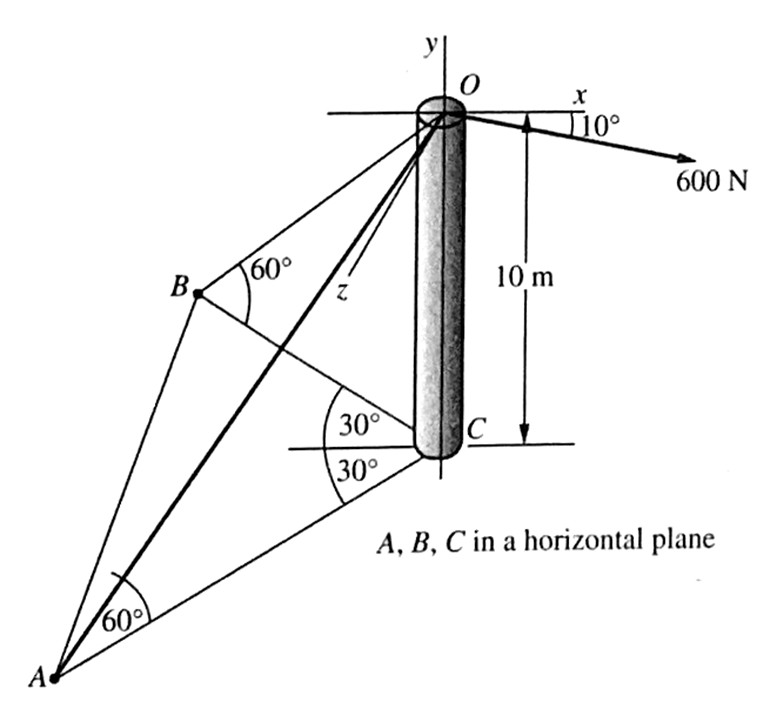
図のように、棒の先端（点 O）に作用する $xy$ 平面内の力（600 N）と、先端につながれた 2 本の支線で、棒（長さ 10 m）を支持している。支線の張力と、棒に作用する力を求めなさい。棒の重さは無視する。棒の足元 C は、回転できるボール継手で支えられている（反力の未知数は 3 成分）。
解答例（方針2）（講義資料の解答例を、手順①〜⑥で、補いながら書く）
① FBD：棒を系とする。外力は、O で支線 A、B の張力 $F_A,F_B$（ワイヤなので引張り、O を各点 A、B のほうへ引く）、600 N の力、足元 C のボール継手の反力 $\boldsymbol R_C=(R_{Cx},R_{Cy},R_{Cz})$。未知数は $F_A,F_B,R_{Cx},R_{Cy},R_{Cz}$ の 5 つ。
② 座標：右手系で、C を原点、$x$ を右、$y$ を上（棒の向き）、$z$ を手前。O は $(0,\ 10,\ 0)$ m。
③ 3つの力をベクトルで書く（支線の向きは、図の角度から、単位ベクトル×大きさ）：
$\boldsymbol F_A=F_A\bigl(-\cos60°\cos30°,\ -\sin60°,\ \cos60°\sin30°\bigr)=(-0.433F_A,\ -0.866F_A,\ 0.25F_A)\qquad(1)$
$\boldsymbol F_B=F_B\bigl(-\cos60°\cos30°,\ -\sin60°,\ -\cos60°\sin30°\bigr)=(-0.433F_B,\ -0.866F_B,\ -0.25F_B)\qquad(2)$
$\boldsymbol R_C=(R_{Cx},\ R_{Cy},\ R_{Cz})\qquad(3)$
$600$ N の力は $xy$ 平面内で $x$ 軸から 10° 下向きなので
$\boldsymbol F_{600}=(600\cos10°,\ -600\sin10°,\ 0)=(591,\ -104,\ 0)\qquad(4)$
← 単位ベクトルの確かめ：$\cos^260°(\cos^230°+\sin^230°)+\sin^260°=0.25+0.75=1$。支線は水平面から 60° 傾いていて、その水平な影は $-x$ 軸から $\pm30°$ 振れている。
・式(2)の2行目（スライド32）は右辺が「$-0.433F_A\boldsymbol i-0.866F_A\boldsymbol j-0.25F_A\boldsymbol k$」になっているが、これは $F_B$ の式なので、$F_B$ の誤り（上の (2) のとおり）。
・式(4)の左辺 $(600\cos10°)\boldsymbol i+(600\sin10°)\boldsymbol j$ は、右辺の $591\boldsymbol i-104\boldsymbol j$ と合わせるなら、$j$ 成分に符号 $-$ がつく（図で力は右下向き）。
④ 釣合い式。点 C のまわりのモーメントの釣合い（O に作用する3力。$\boldsymbol r=\overrightarrow{\mathrm{CO}}=(0,\ 10,\ 0)$）：
$$\sum\boldsymbol r\times\boldsymbol F=F_A\begin{vmatrix}\boldsymbol i&\boldsymbol j&\boldsymbol k\\0&10&0\\-0.433&-0.866&0.25\end{vmatrix}+F_B\begin{vmatrix}\boldsymbol i&\boldsymbol j&\boldsymbol k\\0&10&0\\-0.433&-0.866&-0.25\end{vmatrix}+\begin{vmatrix}\boldsymbol i&\boldsymbol j&\boldsymbol k\\0&10&0\\591&-104&0\end{vmatrix}=\boldsymbol 0\qquad(5)$$
行列式を展開する（第1行 $(\boldsymbol i,\boldsymbol j,\boldsymbol k)$、第2行 $(0,10,0)$、第3行 $(F_x,F_y,F_z)$ の行列式は $10F_z\,\boldsymbol i-10F_x\,\boldsymbol k$）：
$(2.5F_A-2.5F_B)\boldsymbol i+(4.33F_A+4.33F_B-5910)\boldsymbol k=\boldsymbol 0\qquad(6)$
← $\boldsymbol j$ 成分は 0（棒に沿う方向のモーメントは、どの力も出さない）。
力の釣合い：$\sum F_x=-0.433F_A-0.433F_B+591+R_{Cx}=0$、$\sum F_y=R_{Cy}-0.866F_A-0.866F_B-104=0\ (7)$、$\sum F_z=0.25F_A-0.25F_B+R_{Cz}=0$。
⑤ 解く：(6) の $\boldsymbol i$ 成分より $F_A=F_B$。$\boldsymbol k$ 成分より $8.66F=5910$（正確には $5908.9$）から $F_A=F_B=\mathbf{682}$ N（682.3 N）。(7) より $R_{Cy}=0.866\times2\times682.3+104.2=1286\ \mathrm{N}$（資料は 3 桁で $1290$ N）。
点 O まわりのモーメントの釣合い：O に作用する 3 力は腕が 0 で消え、足元の反力だけが残る。$\overrightarrow{\mathrm{OC}}=(0,\ -10,\ 0)$ なので、$\overrightarrow{\mathrm{OC}}\times\boldsymbol R_C=(-10R_{Cz},\ 0,\ 10R_{Cx})=\boldsymbol 0\qquad(8)$ より $R_{Cx}=R_{Cz}=0$。
⑥ 確かめ：
・力の釣合いの検算：$\sum F_x=-0.433\times2\times682.3+590.9=-590.9+590.9=0$ ✓（$R_{Cx}=0$ と整合）、$\sum F_z=0.25\times(682.3-682.3)=0$ ✓（$R_{Cz}=0$ と整合）。
・向き：支線は棒を A、B のほうへ引き、600 N は棒を右へ押す。支線の水平成分 $2\times0.433\times682.3=590.9$ N が、600 N の水平成分 $590.9$ N とちょうど打ち消すので、足元には水平の力がかからない（$R_{Cx}=0$）。足元は、支線の鉛直成分と 600 N の鉛直成分（下向き 104 N）を受けて、上向きに 1286 N。
答 $F_A=F_B=682$ N（引張り）、$R_{Cy}=1290$ N（1286 N）、$R_{Cx}=R_{Cz}=0$。
3次元の釣合い式は 6 本のはずだった。ところが、この例題では (6) の $\boldsymbol j$ 成分が $0=0$ で、実質は 5 本（未知数も 5 つ）だった。理由は 3.1 節の原理で説明できる：棒の足元のボール継手は並進 3 つを妨げるが、棒の軸（$y$ 軸）のまわりの回転は許す。この回転は 2 本の支線でも妨げられない（支線は軸の上の点 O につながっているので、腕が 0）。許されている動きに対応する式は、いつでも $0=0$（自動的に成り立つ）。未知数が減る分だけ、式も減る。
PHOTO 6｜現実
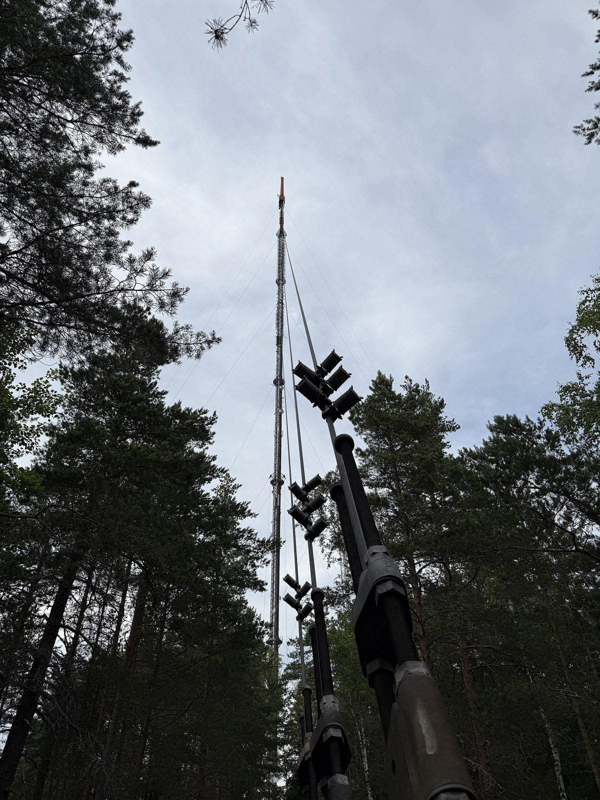
塔は自分では立っていない。何本もの綱が、それぞれ違う向きに引いて、ちょうど釣合わせている。
CedarGlen86／CC0／Wikimedia Commons（エスポー放送局の支線）
MITATE 6｜見立て
一点で交わる何本もの柱は、互いを押し合って、ひとつの立体の釣合いをつくっている。
George Catlin／Public domain／Wikimedia Commons（クロウ族のティピー（1832年頃））
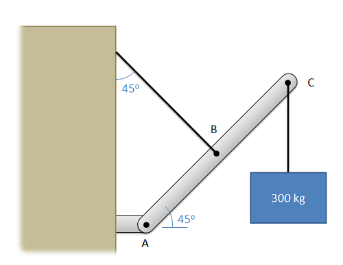
長さ 6 m の棒 ABC を、下端 A で壁にピン留めし、水平から 45° に傾けて保持する。中点 B から、壁と 45° をなす向きのケーブルが壁へ張られている。先端 C に 300 kg の物体が吊るされている。棒の重さは無視する。ケーブルの張力 $T$ と、A の反力を求めよ（$g=9.81\ \mathrm{m/s^2}$）。
出典：Moore ほか, Mechanics Map, 3.6 Equilibrium of Rigid Bodies, 問4（https://mechanicsmap.org/、CC 表示・継承）。公式解答 $T=4162$ N、$A_x=2943$ N、$A_y=0$ と照合済み。
解答
① 系：棒 ABC。外力は、C に吊るした物体の重さ $W=300\times9.81=2943$ N（下向き）、B のケーブルの張力 $T$（B から壁へ向かう向き、引張り）、A のピンの反力 $A_x,A_y$。未知数 3、式 3。
② 座標：A を原点、$x$ を右、$y$ を上。反時計回りを正。
③ B $=(3\cos45°,\ 3\sin45°)=(2.121,\ 2.121)$ m、C $=(4.243,\ 4.243)$ m。張力は壁（左）の上向き 45° なので $\boldsymbol T=T(-0.7071,\ 0.7071)$。
④ A まわりのモーメント（A の反力が消えて、未知数が $T$ だけの式になる）：
$\boldsymbol r_B\times\boldsymbol T=2.121\times0.7071T-2.121\times(-0.7071T)=3.000\,T$、$\boldsymbol r_C\times\boldsymbol W=4.243\times(-2943)=-12487$。よって $3.000T-12487=0$。
力の釣合い：$A_x-0.7071T=0$、$A_y+0.7071T-2943=0$。
⑤ $T=\mathbf{4162}$ N（約 4.16 kN）。$A_x=0.7071\times4162=\mathbf{2943}$ N（右向き）、$A_y=2943-2943=\mathbf{0}$。
⑥ 確かめ：点 C まわり：A の反力 $(2943,\ 0)$ の腕は $(-4.243,\ -4.243)$ で $+12487$、ケーブルの力 $(-2943,\ 2943)$ の腕は $(-2.121,\ -2.121)$ で $-6243-6243=-12487$、和は 0 ✓。
なぜ $A_y=0$ か：ケーブルの鉛直成分 $T\sin45°=2943$ N が、重さ $W$ をちょうど打ち消している（$T=\sqrt2\,W$）。偶然ではなく、B が棒の中点で、ケーブルが 45° のため。
答 $T=4162$ N、A の反力は水平右向きに 2943 N、鉛直成分は 0。
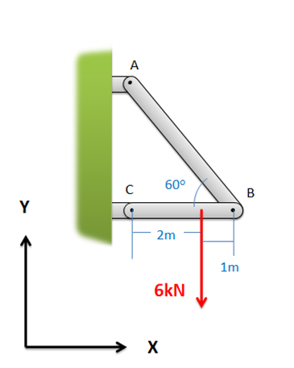
壁に、上の点 A と下の点 C がピンで留められている。部材 AB（A と B をピンで結ぶ）と、水平な部材 BC（長さ 3 m、C は壁にピン留め）が、B でピンでつながる。B の内側の角は 60°。BC 上の、C から 2 m（B から 1 m）の点に、下向き 6 kN の力が働く。部材の重さは無視する。AB に働く力と、C のピンの反力を求めよ。
出典：Moore ほか, Mechanics Map, 5.5 Analysis of Structures（Frames and Machines）, Worked Example 2（https://mechanicsmap.org/）。公式解答（$F_{AB}=4.6$、$C=(2.3,\ 2.0)$ kN）と照合済み（公式は単位を「hN」と手書きしているが kN の意）。
解答
① AB は、両端 A、B のピンだけに力が働く二力部材（途中に荷重なし）。AB の力は A と B を結ぶ直線の向き（4.1 節）。AB を引張りと仮定し、B が受ける力を $F$（B から A へ向かう向き）とする。BC を系にとる。外力：6 kN（下向き）、B で AB から受ける $F(-\cos60°,\ \sin60°)$、C のピン反力 $C_x,C_y$。未知数は $F,C_x,C_y$ の 3、式も 3。
② 座標：C を原点、$x$ を B の向き（右）、$y$ を上。
③④ C まわりのモーメント（C の反力が消える）：B は $x=3$ m で、$F$ の鉛直成分 $F\sin60°$ が効く。荷重は $x=2$ m で下向き：
$3\times F\sin60°-2\times6=0$。力の釣合い：$C_x-F\cos60°=0$、$C_y+F\sin60°-6=0$。
⑤ $F=12/(3\times0.8660)=\mathbf{4.62}$ kN（正なので仮定どおり引張り）。$C_x=4.619\times0.5=\mathbf{2.31}$ kN（右向き）、$C_y=6-4.619\times0.8660=\mathbf{2.00}$ kN（上向き）。
⑥ 確かめ：B まわり：C の反力 $(2.309,\ 2.000)$ は腕 $(-3,\ 0)$ で $-3\times2.000=-6.0$、荷重は腕 $(-1,\ 0)$ で $(-1)(-6)=+6.0$、和は 0 ✓。
答 AB：4.62 kN の引張り（B を A のほうへ引く）。C の反力：(2.31, 2.00) kN。
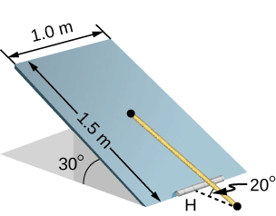
一様な長方形の板（長さ 1.5 m、幅 1.0 m、重さ 300 N）が、下端の蝶番 H で床に取り付けられ、水平から 30° 傾いて保持されている。板の中央から出た綱が、水平から 20° 下向きに、蝶番の側の床へ張られている。綱の張力 $T$ と、蝶番が板に及ぼす力を求めよ。蝶番の力の向きについて、何が言えるか。
出典：OpenStax, University Physics Volume 1, Chapter 12 Problems, Problem 43（CC BY-NC-SA 4.0）https://openstax.org/books/university-physics-volume-1/pages/12-problems。和訳と、綱の向き（図からの読み取り）は本教材。公式解答（$T=1500$ N、蝶番の力 1620 N・水平から 30°）と照合済み（正確な値は 1496 N、1623 N で、公式は丸めている）。
解答
① 系：板。外力は、重さ $W=300$ N（板の中央、蝶番から斜面に沿って 0.75 m の点）、綱の張力 $T$、蝶番の反力 $\boldsymbol H=(H_x,H_y)$（ピンなので 2 成分）。未知数 3、式 3。
② 座標：蝶番 H を原点、$x$ を水平（板の上がる側）、$y$ を上。
③ 板の中央 $\boldsymbol r=0.75\,(\cos30°,\ \sin30°)=(0.6495,\ 0.375)$ m。$\boldsymbol W=(0,\ -300)$。張力は綱の向き $(-\cos20°,\ -\sin20°)=(-0.9397,\ -0.3420)$。
④ 蝶番まわりのモーメント（$\boldsymbol H$ が消える）：
$\boldsymbol r\times\boldsymbol W=0.6495\times(-300)=-194.9$、$\boldsymbol r\times T(\cdots)=T\bigl[0.6495\times(-0.3420)-0.375\times(-0.9397)\bigr]=0.1303\,T$。
よって $0.1303\,T-194.9=0$。
⑤ $T=\mathbf{1496}$ N（約 1500 N）。力の釣合い：$H_x-0.9397T=0$ より $H_x=1406$ N、$H_y-0.3420T-300=0$ より $H_y=812$ N。
大きさ $|\boldsymbol H|=\sqrt{1406^2+812^2}=\mathbf{1623}$ N（約 1620 N）、向きは水平から $\arctan(812/1406)=\mathbf{30.0°}$。
⑥ 確かめ：蝶番の力の向きは、板の傾き 30° と一致する（蝶番の力は板に沿う）。これは偶然ではない。板に働く 3 つの力のうち、重さと張力は板の中央を通る。3 つの力が釣合うとき、作用線は 1 点で交わる（6.3 節の確かめと同じ）ので、蝶番の力の作用線も板の中央を通る。蝶番と板の中央を結ぶ直線は、板に沿う直線である。
答 $T=1500$ N（1496 N）、蝶番の力は 1620 N（1623 N）で、水平から 30°（板の方向）。
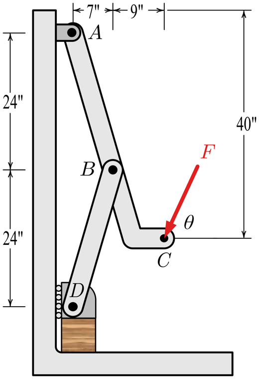
トグルクランプで、C に力 $F$（水平から $\theta=60°$ 下向き、左向き）を加える。部材 BD は B と D のピンだけに力が働く二力部材で、D は壁に沿って上下にだけ動くローラーとして、下の木片を押している。BD の力と、木片を押す力 $Q$ を、$F$ の何倍か答えよ。寸法（図から読み取った。A を原点とし、右を $+x$、上を $+y$ とする）：A(0, 0)、B(7, −24)、C(16, −40)、D(0, −48)（単位 in）。BD の長さは $\sqrt{7^2+24^2}=25$ in。
出典：Baker & Haynes, Engineering Statics: Open and Interactive, §6.6, Example 6.6.17（CC BY-NC-SA 4.0）https://engineeringstatics.org/。和訳と寸法の書き起こしは本教材。公式解答（BD $=2.52F$、$Q=2.42F$）と照合済み。
解答
① 系：部材 ABC。外力は、C の $F$、B で BD から受ける力 $S$（BD は二力部材なので、方向は直線 BD。B を D から遠ざける向き＝圧縮と仮定）、A のピン反力 $A_x,A_y$。未知数は $S,A_x,A_y$ の 3、式 3。
② 座標は上のとおり。反時計回りを正。
③ $\boldsymbol F=F(-\cos60°,\ -\sin60°)=F(-0.5,\ -0.8660)$。D から B への向きの単位ベクトル：$\boldsymbol u=(7,\ 24)/25=(0.28,\ 0.96)$。B の力 $=S\boldsymbol u$。
④ A まわりのモーメント（A の反力が消える）：
$\boldsymbol F$ の C まわり：$16\times(-0.8660F)-(-40)\times(-0.5F)=-13.86F-20F=-33.86F$。
$S\boldsymbol u$ の B まわり：$7\times0.96S-(-24)\times0.28S=6.72S+6.72S=13.44S$。
$13.44S-33.86F=0$。
⑤ $S=33.86F/13.44=\mathbf{2.52}\,F$（正なので仮定どおり、BD は圧縮）。
木片を押す力：BD が D を押す力は、$S$ で向きは B から D へ $(-0.28,\ -0.96)$。鉛直成分 $0.96S=0.96\times2.519F=\mathbf{2.42}\,F$ が木片を押す力 $Q$（水平成分 $0.28S=0.705F$ は、ローラーが壁から受ける力で支えられる）。
⑥ 確かめ：使わなかった力の釣合いから $A_x=-0.205F$、$A_y=-1.552F$。C まわり：A の反力の腕は $(-16,\ 40)$ で $(-16)(-1.552F)-40(-0.205F)=24.83F+8.2F=33.03F$、$S\boldsymbol u$ の腕は $(-9,\ 16)$ で $(-9)(2.418F)-16(0.705F)=-21.76F-11.28F=-33.04F$、和は 0（丸め誤差内）✓。
答 BD：圧縮 $2.52F$。木片を押す力 $Q=2.42F$。力が 2.4 倍に増えるのは、$\theta=60°$ の $F$ のモーメントが、てこ（$A$–$C$）の腕の長さの比で拡大されるため。
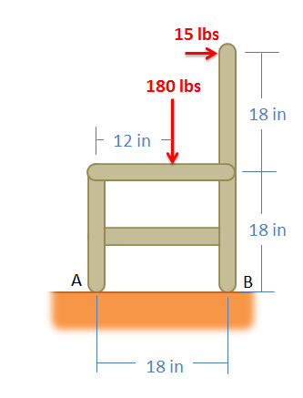
いすの側面図。座面に 180 lb の下向きの力（A から 12 in）、背もたれの上端に 15 lb の水平な力（右向き）が働く。A と B は 18 in 離れている。座面の高さは 18 in、背もたれの上端は座面の上 18 in。床と A の間は滑らかで、B の間は粗い。A、B の反力を求めよ。
出典：Mechanics Map 3.6, 問5（https://mechanicsmap.org/）。公式解答（$N_A=30$、$N_B=150$、$F_B=15$ lb）と照合済み。
① A（滑らか）は鉛直な力 $N_A$ のみ（未知数 1）。B（粗い）は $N_B$ と水平な摩擦力 $F_B$（未知数 2）。計 3、式 3。② $x$ を右、$y$ を上。
③④ $\sum F_x$：$15+F_B=0$ より $F_B=-15$ lb（左向き 15 lb）。B まわりのモーメント（B の力が消える）：$-18N_A+180\times6-15\times36=0$。← 180 lb は B の左 6 in で下向き＝反時計回り（＋）、15 lb は B の上 36 in で右向き＝時計回り（−）、$N_A$ は B の左 18 in で上向き＝時計回り（−）。
⑤ $N_A=(1080-540)/18=\mathbf{30}$ lb。$\sum F_y$：$N_A+N_B=180$ より $N_B=\mathbf{150}$ lb。⑥ A まわり：$18N_B-180\times12-15\times36=2700-2160-540=0$ ✓。
答：$N_A=30$ lb、$N_B=150$ lb、$F_B=15$ lb（左向き）。
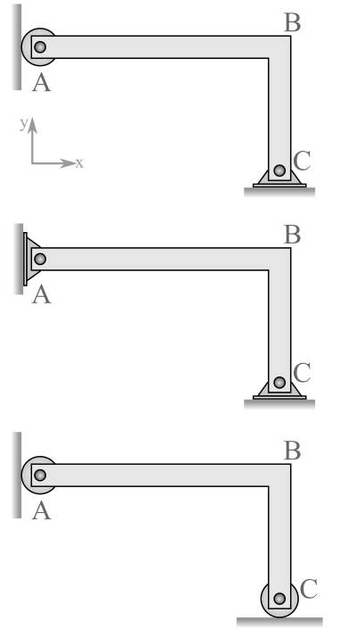
L字の部材を、図の 3 通りの支え（上・中・下）で支える。それぞれ、反力の未知数の数を数え、静定・不静定・不安定のいずれかを答えよ。
出典：Baker & Haynes, Engineering Statics, §5.6（図は同書。CC BY-NC-SA 4.0）https://engineeringstatics.org/。答えは同書の図中の判定と一致。
上：$A_x$ ＋ $C_x,C_y$ ＝ 未知数 3（式 3）：静定。中：$A_x,A_y$ ＋ $C_x,C_y$ ＝ 未知数 4（式 3）：不静定（1 つ多い）。下：$A_x$ ＋ $C_y$ ＝ 未知数 2（式 3）：不安定（式のほうが多く、一般には釣合わない：水平・鉛直の組合せで動く）。
原図の解答：
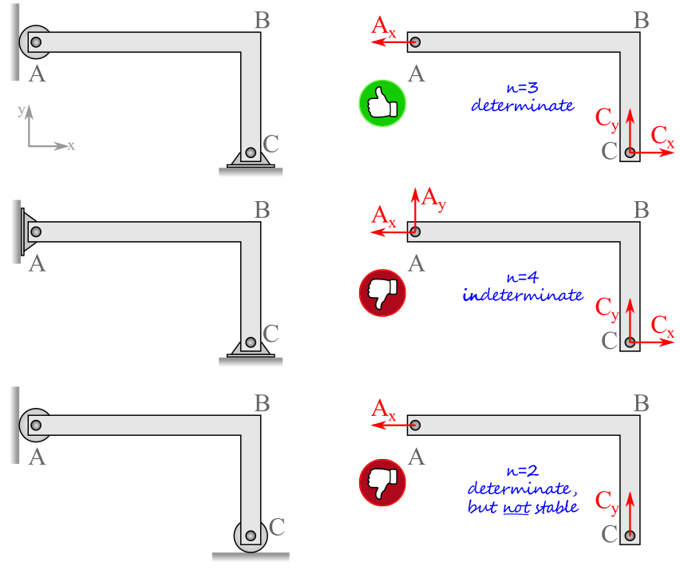
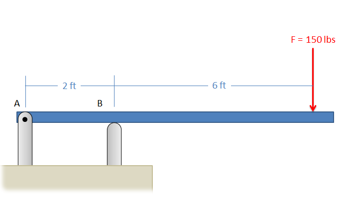
水平な飛び込み板。左端 A はピン、A から 2 ft の B は下から支える支持（鉛直な力のみ）。B から 6 ft の板の上に、150 lb の下向きの力が働く。板の重さは無視する。A、B の反力を求めよ。
出典：Mechanics Map, Homework 3.9（https://mechanicsmap.org/）。公式解答（答えのみ）$B_y=600$ lb、$A_y=-450$ lb と照合済み。
A まわり：$2B_y-150\times8=0$（荷重は A から 8 ft）より $B_y=\mathbf{600}$ lb（上向き）。$\sum F_y$：$A_y+600-150=0$ より $A_y=\mathbf{-450}$ lb（下向き 450 lb）。
確かめ：B まわり：A の反力は B の左 2 ft で下向き 450 lb（腕 $(-2,\ 0)$、力 $(0,\ -450)$）で $(-2)(-450)=+900$、荷重は B の右 6 ft で下向き 150 lb で $6 imes(-150)=-900$、和は 0 ✓。
A が下向きに引かれる（反力が負）：板が B でてこのように持ち上がろうとするのを、A のピンが押さえている。答：$A_y=450$ lb 下向き、$B_y=600$ lb 上向き。
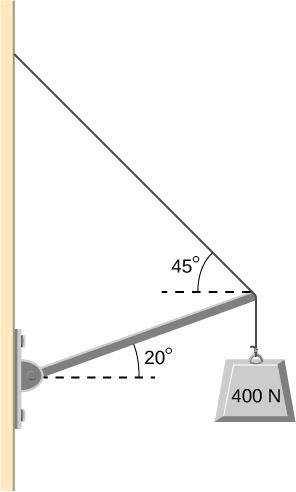
一様なブーム（重さ 700 N）が、壁のヒンジで支えられ、水平から 20° 上向きに伸びている。先端に 400 N の物体が吊るされ、先端から壁へ張られたケーブルが水平と 45° をなす。ケーブルの張力とヒンジの力を求めよ。ヒンジの力はブームの方向を向くか。
出典：OpenStax, University Physics Volume 1, Chapter 12 Problems, Problem 41（CC BY-NC-SA 4.0）https://openstax.org/books/university-physics-volume-1/pages/12-problems。和訳は本教材。公式解答（$T=778$ N、ヒンジ 778 N・水平から 45°、ブームの方向ではない）と照合済み。
① 系：ブーム。ブーム長を $L$ とする。外力：ブームの重さ 700 N（中央）、400 N（先端）、ケーブル $T$（先端から壁の上向き 45° 方向）、ヒンジの反力 $H_x,H_y$。未知数 3。② ヒンジを原点、右・上を正。
③④ ヒンジまわり：先端は $L(\cos20°,\ \sin20°)$、ケーブルの力は $T(-\cos45°,\ \sin45°)$。
$T\cdot L\bigl[\cos20°\sin45°+\sin20°\cos45°\bigr]-700\cdot\tfrac L2\cos20°-400\cdot L\cos20°=0$。
$[\cdots]=\sin(20°+45°)=\sin65°=0.9063$、$\cos20°=0.9397$ なので、$0.9063T=(350+400)\times0.9397=704.8$。
⑤ $T=\mathbf{778}$ N。$H_x=T\cos45°=\mathbf{550}$ N（右向き）、$H_y=700+400-T\sin45°=1100-550=\mathbf{550}$ N（上向き）。大きさ $778$ N、向きは水平から $45°$。
⑥ ヒンジの力の向き（45°）は、ブームの向き（20°）と異なる。ブームは二力部材ではない（途中に自重が作用し、先端にも荷重がある）ので、ヒンジの力はブームに沿うとは限らない。
答：$T=778$ N、ヒンジの力 778 N（水平から 45° 上向き）、ブームの方向ではない。
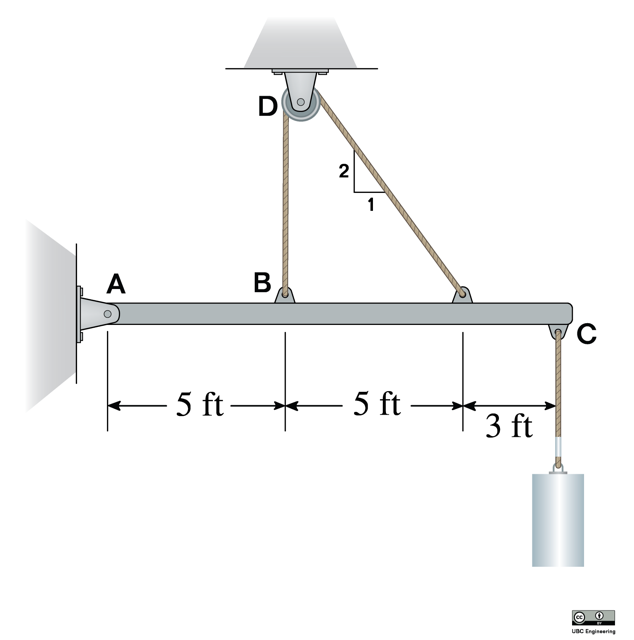
水平な梁を、左端 A のピンと、天井の滑らかな滑車 D を通る 1 本のケーブルで支える。ケーブルは、梁の B（A から 5 ft）から滑車 D まで鉛直に上り、D で折り返して、梁の上の A から 10 ft の点まで、勾配 2（鉛直）：1（水平）で下りている。梁の先端 C（A から 13 ft）に 80 lb の重りが吊るされている。梁の重さは無視する。ケーブルの張力と、A の反力を求めよ。
出典：Mechanics Map 3.6, 問9（図は UBC Engineering、CC BY。Hibbeler の問題の類題）（https://mechanicsmap.org/）。公式解答（$T=74.6$ lb、$A_x=33.4$ lb、$A_y=61.3$ lb 下向き）と照合済み（公式解答の途中式の符号に誤りがあるが、結果は一致）。
① 系：梁。ケーブルは滑らかな滑車を通る 1 本なので、張力 $T$ は全長で同じ（例題 3.3）。梁に作用する力：B で上向き $T$、10 ft の点で、D のほうへ向かう $T(-1,\ 2)/\sqrt5$、C の 80 lb（下向き）、A の反力。未知数は $T,A_x,A_y$ の 3。
② A を原点、$x$ を右、$y$ を上。
③④ A まわり：$5T+10\times\dfrac{2T}{\sqrt5}-13\times80=0$（梁の高さでの水平な力は腕 0）。$\dfrac{2}{\sqrt5}=0.8944$ なので $(5+8.944)T=1040$。
⑤ $T=\mathbf{74.6}$ lb。$\sum F_x$：$A_x-0.4472T=0$ より $A_x=\mathbf{33.4}$ lb（右向き）。$\sum F_y$：$A_y+T+0.8944T-80=0$ より $A_y=80-141.3=\mathbf{-61.3}$ lb（下向き 61.3 lb）。
⑥ 確かめ：10 ft の点まわり：A の力は $x$ 成分 33.4 は腕 0（同じ高さ）、$A_y$ の腕 $-10$：$(-10)(-61.3)=613$、B の $T$：腕 $-5$：$(-5)(74.6)=-373$、C の 80 lb：腕 3：$3\times(-80)=-240$、和は $613-373-240=0$ ✓。
答：$T=74.6$ lb、$A_x=33.4$ lb（右）、$A_y=61.3$ lb（下）。
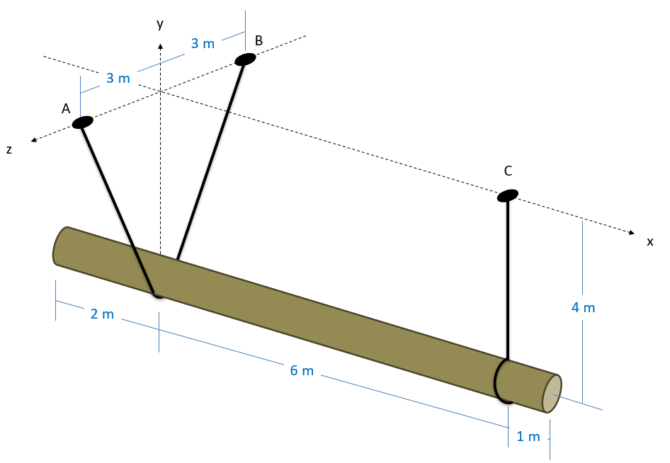
質量 100 kg、長さ 9 m の一様な棒が、水平に、3 本のケーブルで天井から吊られている。ケーブル A、B は、天井の、$z$ 方向に ±3 m 離れた 2 点から、棒の左端から 2 m の同じ点に張られ、ケーブル C は、棒の右端から 1 m の点から鉛直に張られている。天井から棒までの高さは 4 m。各ケーブルの張力を求めよ（$g=9.81\ \mathrm{m/s^2}$）。
出典：Mechanics Map, Homework 3.15（https://mechanicsmap.org/）。和訳と、ケーブル A・B が棒の同じ点につながるという図の読み取りは本教材。公式解答（答えのみ）$T_A=T_B=357.66$ N、$T_C=408.75$ N と照合済み。
① 系：棒。外力：重さ $W=981$ N（中央＝左端から 4.5 m）、$T_A,T_B,T_C$（すべて引張り）。② 左端から 2 m の点 P を原点、$x$ を棒に沿って右、$y$ を上、$z$ を手前。③ ケーブル A、B は、P から天井の $(0,\ 4,\ \pm3)$ へ向かうので、単位ベクトル $(0,\ 4,\ \pm3)/5=(0,\ 0.8,\ \pm0.6)$。ケーブル C は鉛直 $(0,\ 1,\ 0)$。C の点の $x$ は $6$ m、重さの作用点は $x=2.5$ m。
④ P まわり（A、B の力は腕 0）：棒に沿う $x$ 軸に垂直な方向の力だけが効く。$x$ 軸の向きに腕をとるので、モーメントは $z$ 成分：$6T_C-2.5W=0$。
力の釣合い：$y$：$0.8T_A+0.8T_B+T_C-981=0$。$z$：$0.6T_A-0.6T_B=0$（よって $T_A=T_B$）。
⑤ $T_C=2.5\times981/6=\mathbf{408.75}$ N。$T_A=T_B=(981-408.75)/1.6=\mathbf{357.66}$ N。
⑥ 確かめ：左端まわりのモーメント（$x=-2$ の点まわり）：$T_A,T_B$ の鉛直成分 $2\times0.8\times357.66=572.25$ は腕 2、$T_C$ は腕 8、重さは腕 4.5：$2\times572.25+8\times408.75-4.5\times981=1144.5+3270-4414.5=0$ ✓。
答：$T_A=T_B=357.7$ N、$T_C=408.8$ N。
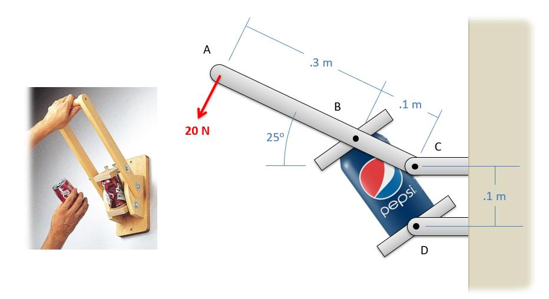
缶つぶし器の腕 ABC は、C で壁にピン留めされている。A に、腕に垂直な 20 N の力を加える。腕の B が缶を押し、缶はもう一方の端 D（C の真下 0.1 m、壁にピン留め）で受けられている。缶 BD を二力部材とみなして、缶に働く力を求めよ。寸法：AB $=0.3$ m、BC $=0.1$ m、腕は水平から 25°。
出典：Mechanics Map, Homework 5.10（https://mechanicsmap.org/）。和訳と、「20 N は腕に垂直」「D は C の真下」という図の読み取りは本教材。公式解答（答えのみ）148.9 N と、この読み取りで一致。
① 系：腕 ABC。外力：A の 20 N、B で缶から受ける力（缶 BD は二力部材なので、方向は直線 BD）、C のピン反力（未知数 2）。大きさを $F$ とする。② C を原点。腕は C から A へ向かって、水平から 25° 上（左上）：C→A の向き $(-\cos25°,\ \sin25°)$。
③ B $=0.1\times(-0.9063,\ 0.4226)=(-0.0906,\ 0.0423)$ m。D $=(0,\ -0.1)$ m。BD の向き（B から D）：$(0.0906,\ -0.1423)/0.1687=(0.5373,\ -0.8434)$。
④ C まわりのモーメント（C の反力が消える）：20 N は腕に垂直で A は C から $0.4$ m なので、そのモーメントの大きさは $20\times0.4=8$ N·m。B の力 $F$（向き $-(0.5373,\ -0.8434)$、つまり D から B へ。缶が腕を押し返す向き）のモーメントの大きさは $F\times|(-0.0906)(-0.8434)-0.0423\times0.5373|=0.05372F$。
⑤ $0.05372F=8$ より $F=\mathbf{148.9}$ N。缶は B と D の両端から押されて圧縮（缶をつぶす力）。
⑥ 確かめ：もし缶がなければ、20 N を A に加えるだけでは、腕は C のまわりを回るだけ。てこの比（A までの距離 0.4 m と、B の力の腕 0.0537 m の比 7.4）が、20 N を 149 N に拡大している。
答：缶に働く力 148.9 N（圧縮）。
例題8（支線で支える棒）で、先端 O に 600 N の力に加えて、$z$ 方向（手前）に 200 N の力も作用するとき、支線の張力 $F_A,F_B$ と足元の反力を求めよ。2 本の張力が等しくならないのはなぜか。
自作（本教材）。解答は sympy で検算済み（draft/check_04.py）。
① 3 次元の釣合い。未知数 5（$F_A,F_B,R_{Cx},R_{Cy},R_{Cz}$）。③ O の力の和：$\boldsymbol F_A+\boldsymbol F_B+(591,\ -104,\ 200)$。④ C まわりのモーメント（(6) と同じ形で、$z$ 成分に 200 が加わる）：
$\boldsymbol i$：$10\times(0.25F_A-0.25F_B+200)=0$、$\boldsymbol k$：$-10\times(-0.433F_A-0.433F_B+591)=0$。
⑤ $F_A-F_B=-800$、$F_A+F_B=590.9/0.433=1364.6$ より $F_A=\mathbf{282.3}$ N、$F_B=\mathbf{1082.3}$ N。足元：$\sum F_x$：$R_{Cx}=0$、$\sum F_z$：$R_{Cz}=-(0.25(F_A-F_B)+200)=-(−200+200)=0$、$R_{Cy}=0.866\times1364.6+104.2=\mathbf{1286}$ N。
⑥ 確かめ：点 O まわり（足元の反力だけが残る）：$R_{Cx}=R_{Cz}=0$ と整合 ✓。
$F_A\ne F_B$ の理由：手前向き（$+z$）の 200 N は、支線 A（$+z$ 側）の張力を弱め、支線 B（$-z$ 側）を強くして初めて、棒を $z$ 方向に釣合わせる。2 本とも張力は正（引張り）のまま。
答：$F_A=282$ N、$F_B=1082$ N、$R_C=(0,\ 1286,\ 0)$ N。
| 講義資料 | 本教材 |
|---|---|
| p.1–3 第3章の扉・マニピュレータ、今日のポイント | 序 |
| p.4 3・1 釣合い | 1.1 |
| p.5 3・1・1 1点に作用する力の釣合い（式 3.3、3.6） | 1.2 |
| p.6 3・1・2 複数の点に作用する力の釣合い（式 3.28） | 1.3（1.4 は本教材の追加） |
| p.7–9 3・1・3 釣合いにおける内力 | 2章 |
| p.11–12 1. 釣合い条件（未知数の数、不静定問題） | 1.1、3.3、3.4 |
| p.13–14 2. Two-Force Members | 4.1、4.2、4.4 |
| p.15–18 3. 問題を解くためのヒント（FBD、支点の反力、ヒント ii–v） | 2.4、3.1、3.2、5章、1.4 |
| p.19–20 4. 部材の内力（引張・圧縮） | 4.3 |
| p.21 例題 3.1（内力の考察として） | 1.5、4.3 |
| p.22–24 例題 3.4（解答例・別解） | 6.1 |
| p.25–29 例題（ロボット台車） | 序、6.2 |
| p.30 例題 3.3（教科書の解き方・別解） | 6.3 |
| p.31–33 例題 3次元の釣合い（Schaum's 図 6-1） | 7章 |


.jpg){kind=link}


,_1523_(Latin_ed.),_NGA_6810.jpg){kind=link}